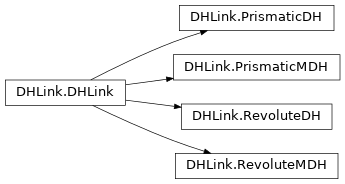

Denavit-Hartenberg models
Code author: Jesse Haviland
This class is used to model robots defined in terms of standard or modified Denavit-Hartenberg notation.
Note
These classes provide similar functionality and notation to MATLAB Toolbox SerialLink and
Link classes.
DHRobot
The various Models all subclass this class.
- class roboticstoolbox.robot.DHRobot.DHRobot(links, meshdir=None, **kwargs)[source]
Bases:
RobotClass for robots defined using Denavit-Hartenberg notation
- Parameters
L (list(n)) – List of links which define the robot
name (str) – Name of the robot
manufacturer (str) – Manufacturer of the robot
base (SE3) – Location of the base
tool (SE3) – Location of the tool
gravity (ndarray(3)) – Gravitational acceleration vector
A concrete superclass for arm type robots defined using Denavit-Hartenberg notation, that represents a serial-link arm-type robot. Each link and joint in the chain is described by a DHLink-class object using Denavit-Hartenberg parameters (standard or modified).
Note
Link subclass elements passed in must be all standard, or all modified, DH parameters.
- Reference
Robotics, Vision & Control, Chaps 7-9, P. Corke, Springer 2011.
Robot, Modeling & Control, M.Spong, S. Hutchinson & M. Vidyasagar, Wiley 2006.
- property mdh
Modified Denavit-Hartenberg status
- Returns
whether robot is defined using modified Denavit-Hartenberg notation
- Return type
bool
Example:
>>> import roboticstoolbox as rtb >>> puma = rtb.models.DH.Puma560() >>> puma.mdh 0 >>> panda = rtb.models.DH.Panda() >>> panda.mdh 1
- property d
Link offset values
- Returns
List of link offset values \(d_j\).
- Return type
ndarray(n,)
The following are equivalent:
robot.links[j].d robot.d[j]
Example:
>>> import roboticstoolbox as rtb >>> robot = rtb.models.DH.Puma560() >>> robot.d [0.6718299999999999, 0, 0.15005, 0.4318, 0, 0]
- property a
Link length values
- Returns
List of link length values \(a_j\).
- Return type
ndarray(n,)
The following are equivalent:
robot.links[j].a robot.a[j]
Example:
>>> import roboticstoolbox as rtb >>> robot = rtb.models.DH.Puma560() >>> robot.a [0, 0.4318, 0.0203, 0, 0, 0]
- property theta
Joint angle values
- Returns
List of joint angle values \(\theta_j\).
- Return type
ndarray(n,)
The following are equivalent:
robot.links[j].theta robot.theta[j]
Example:
>>> import roboticstoolbox as rtb >>> robot = rtb.models.DH.Puma560() >>> robot.theta [0.0, 0.0, 0.0, 0.0, 0.0, 0.0]
- property alpha
Link twist values
- Returns
List of link twist values \(\alpha_j\).
- Return type
ndarray(n,)
The following are equivalent:
robot.links[j].alpha robot.alpha[j]
Example:
>>> import roboticstoolbox as rtb >>> robot = rtb.models.DH.Puma560() >>> robot.alpha [1.5707963267948966, 0.0, -1.5707963267948966, 1.5707963267948966, -1.5707963267948966, 0.0]
- property r
Link centre of mass values
- Returns
Array of link centre of mass values \(r_j\).
- Return type
ndarray(3,n)
Example:
>>> import roboticstoolbox as rtb >>> robot = rtb.models.DH.Puma560() >>> robot.r array([[ 0. , -0.3638, -0.0203, 0. , 0. , 0. ], [ 0. , 0.006 , -0.0141, 0.019 , 0. , 0. ], [ 0. , 0.2275, 0.07 , 0. , 0. , 0.032 ]])
- property offset
Joint offset values
- Returns
List of joint offset values \(\bar{q}_j\).
- Return type
ndarray(n,)
Example:
>>> import roboticstoolbox as rtb >>> robot = rtb.models.DH.Puma560() >>> robot.offset [0.0, 0.0, 0.0, 0.0, 0.0, 0.0]
- property reach
Reach of the robot
- Returns
Maximum reach of the robot
- Return type
float
A conservative estimate of the reach of the robot. It is computed as \(\sum_j |a_j| + |d_j|\) where \(d_j\) is taken as the maximum joint coordinate (
qlim) if the joint is primsmatic.Note
This is the length sum referred to in Craig’s book
Probably an overestimate of the actual reach
Used by numerical inverse kinematics to scale translational error.
For a prismatic joint, uses
qlimif it is set
Warning
Computed on the first access. If kinematic parameters subsequently change this will not be reflected.
- property nbranches
Number of branches
- Returns
number of branches in the robot’s kinematic tree
- Return type
int
Number of branches in this robot.
Example:
>>> import roboticstoolbox as rtb >>> robot = rtb.models.DH.Panda() >>> robot.nbranches 1
- A(j, q=None)[source]
Link forward kinematics
- Parameters
j (int, 2-tuple) – Joints to compute link transform for
q (float ndarray(1,n)) – The joint configuration of the robot (Optional, if not supplied will use the stored q values)
- Return T
The transform between link frames
- Rtype T
SE3
robot.A(j, q)transform between link frames {0} and {j}.qis a vector (n) of joint variables.robot.A([j1, j2], q)as above between link frames {j1} and {j2}.robot.A(j)as above except uses the stored q value of the robot object.
Note
Base and tool transforms are not applied.
- islimit(q=None)[source]
Joint limit test
- Parameters
q (ndarray(n) – The joint configuration of the robot (Optional, if not supplied will use the stored q values)
- Return v
is a vector of boolean values, one per joint, False if
q[j]is within the joint limits, else True- Rtype v
bool list
robot.islimit(q)is a list of boolean values indicating if the joint configurationqis in violation of the joint limits.robot.jointlimit()as above except uses the stored q value of the robot object.
Example:
>>> import roboticstoolbox as rtb >>> robot = rtb.models.DH.Puma560() >>> robot.islimit([0, 0, -4, 4, 0, 0]) [False, False, True, False, False, False]
- isspherical()[source]
Test for spherical wrist
- Returns
True if spherical wrist
- Return type
bool
Tests if the robot has a spherical wrist, that is, the last 3 axes are revolute and their axes intersect at a point.
>>> import roboticstoolbox as rtb >>> robot = rtb.models.DH.Puma560() >>> robot.isspherical() True
- dhunique()[source]
Print the unique DH parameters
Print a table showing all the non-zero DH parameters, and their values. This is the minimum set of kinematic parameters required to describe the robot.
Example:
>>> import roboticstoolbox as rtb >>> puma = rtb.models.DH.Puma560() >>> puma.dhunique() ┌──────┬────────┐ │param │ value │ ├──────┼────────┤ │ d0 │ 0.6718 │ │ ⍺0 │ 1.571 │ │ a1 │ 0.4318 │ │ d2 │ 0.15 │ │ a2 │ 0.0203 │ │ ⍺2 │ -1.571 │ │ d3 │ 0.4318 │ │ ⍺3 │ 1.571 │ │ ⍺4 │ -1.571 │ └──────┴────────┘
- twists(q=None)[source]
Joint axes as twists
- Parameters
q – The joint configuration of the robot, defaults to zero
- Returns
a vector of joint axis twists
- Return type
Twist3 instance
- Returns
Pose of the tool
- Return type
SE3 instance
tw, T0 = twists(q)calculates a vector of Twist objects (n) that represent the axes of the joints for the robot with joint coordinatesq(n). Also returns T0 which is an SE3 object representing the pose of the tool.tw, T0 = twists()as above but the joint coordinates are taken to be zero.
Example:
>>> import roboticstoolbox as rtb >>> robot = rtb.models.DH.Puma560() >>> tw, T0 = robot.twists() >>> tw Twist3([ [-0, -0, -0, 0, 0, 1], [0.67183, -0, -0, 0, -1, 6.1232e-17], [0.67183, -2.644e-17, -0.4318, 0, -1, 6.1232e-17], [-0.15005, -0.4521, 0, 0, 0, 1], [1.1036, -2.7683e-17, -0.4521, 0, -1, 6.1232e-17], [-0.15005, -0.4521, 0, 0, 0, 1] ]) >>> T0 SE3(array([[ 1. , 0. , 0. , 0.4521], [ 0. , 1. , 0. , -0.15 ], [ 0. , 0. , 1. , 1.1036], [ 0. , 0. , 0. , 1. ]]))
- ets(*args, **kwargs) ETS[source]
Robot kinematics as an elemenary transform sequence
- Returns
elementary transform sequence
- Return type
Example:
>>> import roboticstoolbox as rtb >>> puma = rtb.models.DH.Puma560() >>> puma.ets() [ET.Rz(jindex=0, qlim=array([-2.7925, 2.7925])), ET.tz(eta=0.6718299999999999), ET.Rx(eta=1.5707963267948966), ET.Rz(jindex=1, qlim=array([-1.9199, 1.9199])), ET.tx(eta=0.4318), ET.Rz(jindex=2, qlim=array([-2.3562, 2.3562])), ET.tz(eta=0.15005), ET.tx(eta=0.0203), ET.Rx(eta=-1.5707963267948966), ET.Rz(jindex=3, qlim=array([-4.6426, 4.6426])), ET.tz(eta=0.4318), ET.Rx(eta=1.5707963267948966), ET.Rz(jindex=4, qlim=array([-1.7453, 1.7453])), ET.Rx(eta=-1.5707963267948966), ET.Rz(jindex=5, qlim=array([-4.6426, 4.6426]))]
- fkine(q, **kwargs)[source]
Forward kinematics
- Parameters
q (ndarray(n) or ndarray(m,n)) – The joint configuration
- Returns
Forward kinematics as an SE(3) matrix
- Return type
SE3 instance
robot.fkine(q)computes the forward kinematics for the robot at joint configurationq.
If q is a 2D array, the rows are interpreted as the generalized joint coordinates for a sequence of points along a trajectory.
q[k,j]is the j’th joint coordinate for the k’th trajectory configuration, and the returnedSE3instance containsnvalues.Example:
>>> import roboticstoolbox as rtb >>> puma = rtb.models.DH.Puma560() >>> puma.fkine([0, 0, 0, 0, 0, 0]) SE3(array([[ 1. , 0. , 0. , 0.4521], [ 0. , 1. , 0. , -0.15 ], [ 0. , 0. , 1. , 1.1036], [ 0. , 0. , 0. , 1. ]]))
Note
The robot’s base or tool transform, if present, are incorporated into the result.
Joint offsets, if defined, are added to
qbefore the forward kinematics are computed.
- fkine_path(q, old=None)[source]
Compute the pose of every link frame
- Parameters
q (darray(n)) – The joint configuration
- Returns
Pose of all links
- Return type
SE3 instance
T = robot.fkine_path(q)is an SE3 instance withrobot.nlinks + 1values:T[0]is the base transformT[i+1]is the pose of link whosenumberisi
- References
Kinematic Derivatives using the Elementary Transform Sequence, J. Haviland and P. Corke
- fkine_all(q=None, old=True)[source]
Forward kinematics for all link frames
- Parameters
q (ndarray(n) or ndarray(m,n)) – The joint configuration of the robot (Optional, if not supplied will use the stored q values).
old (bool, optional) – “old” behaviour, defaults to True
- Returns
Forward kinematics as an SE(3) matrix
- Return type
SE3 instance with
nvalues
fkine_all(q)evaluates fkine for each joint within a robot and returns a sequence of link frame poses.fkine_all()as above except uses the stored q value of the robot object.
Example:
>>> import roboticstoolbox as rtb >>> puma = rtb.models.DH.Puma560() >>> T = puma.fkine_all([0, 0, 0, 0, 0, 0]) >>> len(T) 7
Note
Old behaviour is to return a list of
nframes {1} to {n}, but ifold=Falseit returns ``n``+1 frames {0} to {n}, ie. it includes the base frame.The robot’s base or tool transform, if present, are incorporated into the result.
Joint offsets, if defined, are added to q before the forward kinematics are computed.
- jacobe(q, half=None, **kwargs)[source]
Manipulator Jacobian in end-effector frame
- Parameters
q (ndarray(n)) – Joint coordinate vector
half (str) – return half Jacobian: ‘trans’ or ‘rot’
- Return J
The manipulator Jacobian in the end-effector frame
- Return type
ndarray(6,n)
robot.jacobe(q)is the manipulator Jacobian matrix which maps joint velocity to end-effector spatial velocity.
End-effector spatial velocity \(\nu = (v_x, v_y, v_z, \omega_x, \omega_y, \omega_z)^T\) is related to joint velocity by \({}^{E}\!\nu = \mathbf{J}_m(q) \dot{q}\).
Example:
>>> import roboticstoolbox as rtb >>> puma = rtb.models.DH.Puma560() >>> puma.jacobe([0, 0, 0, 0, 0, 0]) array([[ 0.15 , -0.4318, -0.4318, 0. , 0. , 0. ], [ 0.4521, 0. , 0. , 0. , 0. , 0. ], [ 0. , 0.4521, 0.0203, 0. , 0. , 0. ], [ 0. , 0. , 0. , 0. , 0. , 0. ], [ 0. , -1. , -1. , 0. , -1. , 0. ], [ 1. , 0. , 0. , 1. , 0. , 1. ]])
Warning
This is the geometric Jacobian as described in texts by Corke, Spong etal., Siciliano etal. The end-effector velocity is described in terms of translational and angular velocity, not a velocity twist as per the text by Lynch & Park.
- jacob0(q=None, T=None, half=None, start=None, end=None)[source]
Manipulator Jacobian in world frame
- Parameters
q (ndarray(n)) – Joint coordinate vector
T (SE3 instance) – Forward kinematics if known, SE(3 matrix)
half (str) – return half Jacobian: ‘trans’ or ‘rot’
- Return J
The manipulator Jacobian in the world frame
- Return type
ndarray(6,n)
robot.jacob0(q)is the manipulator geometric Jacobian matrix which maps joint velocity to end-effector spatial velocity.
End-effector spatial velocity \(\nu = (v_x, v_y, v_z, \omega_x, \omega_y, \omega_z)^T\) is related to joint velocity by \({}^{0}\!\nu = \mathbf{J}_0(q) \dot{q}\).
Example:
>>> import roboticstoolbox as rtb >>> puma = rtb.models.DH.Puma560() >>> puma.jacob0([0, 0, 0, 0, 0, 0]) array([[ 0.15 , -0.4318, -0.4318, 0. , 0. , 0. ], [ 0.4521, 0. , 0. , 0. , 0. , 0. ], [ 0. , 0.4521, 0.0203, 0. , 0. , 0. ], [ 0. , 0. , 0. , 0. , 0. , 0. ], [ 0. , -1. , -1. , 0. , -1. , 0. ], [ 1. , 0. , 0. , 1. , 0. , 1. ]])
Warning
This is the geometric Jacobian is as described in texts by Corke, Spong etal., Siciliano etal. The end-effector velocity is described in terms of translational and angular velocity, not a velocity twist as per the text by Lynch & Park.
Note
Tcan be passed in to save the cost of computing forward kinematics which is needed to transform velocity from end-effector frame to world frame.
- jacob0_analytical(q, representation=None, T=None)[source]
Manipulator Jacobian in world frame
- Parameters
q (ndarray(n)) – Joint coordinate vector
representation (str) – return analytical Jacobian instead of geometric Jacobian
T (SE3 instance) – Forward kinematics if known, SE(3 matrix)
- Return J
The manipulator analytical Jacobian in the world frame
- Return type
ndarray(6,n)
Return the manipulator’s analytical Jacobian matrix which maps joint velocity to end-effector spatial velocity.
End-effector spatial velocity \(\nu_a = (v_x, v_y, v_z, \dot{\Gamma}_1, \dot{\Gamma}_2, \dot{\Gamma}_3)^T\) is related to joint velocity by \({}^{0}\!\nu_a = \mathbf{J}_{a,0}(q) \dot{q}\). Where \(\dvec{\Gamma} = (\dot{\Gamma}_1, \dot{\Gamma}_2, \dot{\Gamma}_3)\) is orientation rate expressed as one of:
representationRotational representation
'rpy/xyz'RPY angular rates in XYZ order
'rpy/zyx'RPY angular rates in XYZ order
'eul'Euler angular rates in ZYZ order
'exp'exponential coordinate rates
Example:
>>> import roboticstoolbox as rtb >>> puma = rtb.models.DH.Puma560() >>> puma.jacob0_analytical([0, 0, 0, 0, 0, 0], "rpy/xyz") array([[ 0.15 , -0.4318, -0.4318, 0. , 0. , 0. ], [ 0.4521, 0. , 0. , 0. , 0. , 0. ], [ 0. , 0.4521, 0.0203, 0. , 0. , 0. ], [ 1. , 0. , 0. , 1. , 0. , 1. ], [ 0. , -1. , -1. , 0. , -1. , 0. ], [ 0. , 0. , 0. , 0. , 0. , 0. ]])
Warning
The geometric Jacobian is as described in texts by Corke, Spong etal., Siciliano etal. The end-effector velocity is described in terms of translational and angular velocity, not a velocity twist as per the text by Lynch & Park.
Note
Tcan be passed in to save the cost of computing forward kinematics which is needed to transform velocity from end-effector frame to world frame.
- hessian0(q=None, J0=None, start=None, end=None)[source]
Manipulator Hessian in base frame
- Parameters
q (array_like) – joint coordinates
J0 (ndarray(6,n)) – Jacobian in {0} frame
- Returns
Hessian matrix
- Return type
ndarray(6,n,n)
This method calculcates the Hessisan in the base frame. One of
J0orqis required. IfJ0is already calculated for the joint coordinatesqit can be passed in to to save computation time.If we take the time derivative of the differential kinematic relationship
\[\begin{split}\nu &= \mat{J}(\vec{q}) \dvec{q} \\ \alpha &= \dmat{J} \dvec{q} + \mat{J} \ddvec{q}\end{split}\]where
\[\dmat{J} = \mat{H} \dvec{q}\]and \(\mat{H} \in \mathbb{R}^{6\times n \times n}\) is the Hessian tensor.
The elements of the Hessian are
\[\mat{H}_{i,j,k} = \frac{d^2 u_i}{d q_j d q_k}\]where \(u = \{t_x, t_y, t_z, r_x, r_y, r_z\}\) are the elements of the spatial velocity vector.
Similarly, we can write
\[\mat{J}_{i,j} = \frac{d u_i}{d q_j}\]- References
Kinematic Derivatives using the Elementary Transform Sequence, J. Haviland and P. Corke
- Seealso
jacob0(),jacob_dot()
- delete_rne()[source]
Frees the memory holding the robot object in c if the robot object has been initialised in c.
- rne(q, qd=None, qdd=None, gravity=None, fext=None, base_wrench=False)[source]
Inverse dynamics
- Parameters
q (ndarray(n)) – Joint coordinates
qd (ndarray(n)) – Joint velocity
qdd (ndarray(n)) – The joint accelerations of the robot
gravity (ndarray(6)) – Gravitational acceleration to override robot’s gravity value
fext (ndarray(6)) – Specify wrench acting on the end-effector \(W=[F_x F_y F_z M_x M_y M_z]\)
tau = rne(q, qd, qdd, grav, fext)is the joint torque required for the robot to achieve the specified joint positionq(1xn), velocityqd(1xn) and accelerationqdd(1xn), where n is the number of robot joints.fextdescribes the wrench acting on the end-effectorTrajectory operation: If q, qd and qdd (mxn) are matrices with m cols representing a trajectory then tau (mxn) is a matrix with cols corresponding to each trajectory step.
Note
The torque computed contains a contribution due to armature inertia and joint friction.
If a model has no dynamic parameters set the result is zero.
- Seealso
- rne_python(Q, QD=None, QDD=None, gravity=None, fext=None, debug=False, base_wrench=False)[source]
Compute inverse dynamics via recursive Newton-Euler formulation
- Parameters
Q – Joint coordinates
QD – Joint velocity
QDD – Joint acceleration
gravity (array_like(3), optional) – gravitational acceleration, defaults to attribute of self
fext (array-like(6), optional) – end-effector wrench, defaults to None
debug (bool, optional) – print debug information to console, defaults to False
base_wrench (bool, optional) – compute the base wrench, defaults to False
- Raises
ValueError – for misshaped inputs
- Returns
Joint force/torques
- Return type
NumPy array
Recursive Newton-Euler for standard Denavit-Hartenberg notation.
rne_dh(q, qd, qdd)where the arguments have shape (n,) where n is the number of robot joints. The result has shape (n,).rne_dh(q, qd, qdd)where the arguments have shape (m,n) where n is the number of robot joints and where m is the number of steps in the joint trajectory. The result has shape (m,n).rne_dh(p)where the input is a 1D arrayp= [q, qd, qdd] with shape (3n,), and the result has shape (n,).rne_dh(p)where the input is a 2D arrayp= [q, qd, qdd] with shape (m,3n) and the result has shape (m,n).
Note
This is a pure Python implementation and slower than the .rne()
which is written in C. - This version supports symbolic model parameters - Verified against MATLAB code
- Seealso
- config_validate(config, allowables)[source]
Validate a configuration string
- Parameters
config (str) – a configuration string
allowable (tuple of str) – [description]
- Raises
ValueError – bad character in configuration string
- Returns
configuration string
- Return type
str
For analytic inverse kinematics the Toolbox uses a string whose letters indicate particular solutions, eg. for the Puma 560
Character
Meaning
‘l’
lefty
‘r’
righty
‘u’
elbow up
‘d’
elbow down
‘n’
wrist not flipped
‘f’
wrist flipped
This method checks that the configuration string is valid and adds default values for missing characters. For example:
config = self.config_validate(config, (‘lr’, ‘ud’, ‘nf’))
indicates the valid characters, and the first character in each string is the default, ie. if neither ‘l’ or ‘r’ is given then ‘l’ will be added to the string.
- ik_lm_chan(Tep: Union[ndarray, SE3], q0: Optional[ndarray] = None, ilimit: int = 30, slimit: int = 100, tol: float = 1e-06, reject_jl: bool = True, we: Optional[ndarray] = None, λ: float = 1.0) Tuple[ndarray, int, int, int, float][source]
Numerical inverse kinematics by Levenberg-Marquadt optimization (Chan’s Method)
- Parameters
Tep – The desired end-effector pose or pose trajectory
q0 – initial joint configuration (default to random valid joint configuration contrained by the joint limits of the robot)
ilimit – maximum number of iterations per search
slimit – maximum number of search attempts
tol – final error tolerance
reject_jl – constrain the solution to being within the joint limits of the robot (reject solution with invalid joint configurations and perfrom another search up to the slimit)
we – a mask vector which weights the end-effector error priority. Corresponds to translation in X, Y and Z and rotation about X, Y and Z respectively
λ – value of lambda for the damping matrix Wn
- Returns
inverse kinematic solution
- Return type
tuple (q, success, iterations, searches, residual)
sol = ets.ik_lm_chan(Tep)are the joint coordinates (n) corresponding to the robot end-effector poseTepwhich is anSE3orndarrayobject. This method can be used for robots with any number of degrees of freedom. The return valuesolis a tuple with elements:If
success == 0theqvalues will be valid numbers, but the solution will be in error. The amount of error is indicated by theresidual.Joint Limits:
sol = robot.ikine_LM(T, slimit=100)which is the deafualt for this method. The solver will initialise a solution attempt with a random valid q0 and perform a maximum of ilimit steps within this attempt. If a solution is not found, this process is repeated up to slimit times.Global search:
sol = robot.ikine_LM(T, reject_jl=True)is the deafualt for this method. By setting reject_jl to True, the solver will discard any solution which violates the defined joint limits of the robot. The solver will then re-initialise with a new random q0 and repeat the process up to slimit times. Note that finding a solution with valid joint coordinates takes longer than without.Underactuated robots:
For the case where the manipulator has fewer than 6 DOF the solution space has more dimensions than can be spanned by the manipulator joint coordinates.
In this case we specify the
weoption where thewevector (6) specifies the Cartesian DOF (in the wrist coordinate frame) that will be ignored in reaching a solution. The we vector has six elements that correspond to translation in X, Y and Z, and rotation about X, Y and Z respectively. The value can be 0 (for ignore) or above to assign a priority relative to other Cartesian DoF. The number of non-zero elements must equal the number of manipulator DOF.For example when using a 3 DOF manipulator tool orientation might be unimportant, in which case use the option
we=[1, 1, 1, 0, 0, 0].Note
- See `Toolbox kinematics wiki page
<https://github.com/petercorke/robotics-toolbox-python/wiki/Kinematics>`_
Implements a Levenberg-Marquadt variable-damping solver.
- The tolerance is computed on the norm of the error between
current and desired tool pose. This norm is computed from distances and angles without any kind of weighting.
- The inverse kinematic solution is generally not unique, and
depends on the initial guess
q0.
- References
TODO
- Seealso
TODO
- ik_lm_wampler(Tep: Union[ndarray, SE3], q0: Optional[ndarray] = None, ilimit: int = 30, slimit: int = 100, tol: float = 1e-06, reject_jl: bool = True, we: Optional[ndarray] = None, λ: float = 1.0) Tuple[ndarray, int, int, int, float][source]
Numerical inverse kinematics by Levenberg-Marquadt optimization (Wamplers’s Method)
- Parameters
Tep – The desired end-effector pose or pose trajectory
q0 – initial joint configuration (default to random valid joint configuration contrained by the joint limits of the robot)
ilimit – maximum number of iterations per search
slimit – maximum number of search attempts
tol – final error tolerance
reject_jl – constrain the solution to being within the joint limits of the robot (reject solution with invalid joint configurations and perfrom another search up to the slimit)
we – a mask vector which weights the end-effector error priority. Corresponds to translation in X, Y and Z and rotation about X, Y and Z respectively
λ – value of lambda for the damping matrix Wn
- Returns
inverse kinematic solution
- Return type
tuple (q, success, iterations, searches, residual)
sol = ets.ik_lm_chan(Tep)are the joint coordinates (n) corresponding to the robot end-effector poseTepwhich is anSE3orndarrayobject. This method can be used for robots with any number of degrees of freedom. The return valuesolis a tuple with elements:If
success == 0theqvalues will be valid numbers, but the solution will be in error. The amount of error is indicated by theresidual.Joint Limits:
sol = robot.ikine_LM(T, slimit=100)which is the deafualt for this method. The solver will initialise a solution attempt with a random valid q0 and perform a maximum of ilimit steps within this attempt. If a solution is not found, this process is repeated up to slimit times.Global search:
sol = robot.ikine_LM(T, reject_jl=True)is the deafualt for this method. By setting reject_jl to True, the solver will discard any solution which violates the defined joint limits of the robot. The solver will then re-initialise with a new random q0 and repeat the process up to slimit times. Note that finding a solution with valid joint coordinates takes longer than without.Underactuated robots:
For the case where the manipulator has fewer than 6 DOF the solution space has more dimensions than can be spanned by the manipulator joint coordinates.
In this case we specify the
weoption where thewevector (6) specifies the Cartesian DOF (in the wrist coordinate frame) that will be ignored in reaching a solution. The we vector has six elements that correspond to translation in X, Y and Z, and rotation about X, Y and Z respectively. The value can be 0 (for ignore) or above to assign a priority relative to other Cartesian DoF. The number of non-zero elements must equal the number of manipulator DOF.For example when using a 3 DOF manipulator tool orientation might be unimportant, in which case use the option
we=[1, 1, 1, 0, 0, 0].Note
- See `Toolbox kinematics wiki page
<https://github.com/petercorke/robotics-toolbox-python/wiki/Kinematics>`_
Implements a Levenberg-Marquadt variable-damping solver.
- The tolerance is computed on the norm of the error between
current and desired tool pose. This norm is computed from distances and angles without any kind of weighting.
- The inverse kinematic solution is generally not unique, and
depends on the initial guess
q0.
- References
TODO
- Seealso
TODO
- ik_lm_sugihara(Tep: Union[ndarray, SE3], q0: Optional[ndarray] = None, ilimit: int = 30, slimit: int = 100, tol: float = 1e-06, reject_jl: bool = True, we: Optional[ndarray] = None, λ: float = 1.0) Tuple[ndarray, int, int, int, float][source]
Numerical inverse kinematics by Levenberg-Marquadt optimization (Sugihara’s Method)
- Parameters
Tep – The desired end-effector pose or pose trajectory
q0 – initial joint configuration (default to random valid joint configuration contrained by the joint limits of the robot)
ilimit – maximum number of iterations per search
slimit – maximum number of search attempts
tol – final error tolerance
reject_jl – constrain the solution to being within the joint limits of the robot (reject solution with invalid joint configurations and perfrom another search up to the slimit)
we – a mask vector which weights the end-effector error priority. Corresponds to translation in X, Y and Z and rotation about X, Y and Z respectively
λ – value of lambda for the damping matrix Wn
- Returns
inverse kinematic solution
- Return type
tuple (q, success, iterations, searches, residual)
sol = ets.ik_lm_chan(Tep)are the joint coordinates (n) corresponding to the robot end-effector poseTepwhich is anSE3orndarrayobject. This method can be used for robots with any number of degrees of freedom. The return valuesolis a tuple with elements:If
success == 0theqvalues will be valid numbers, but the solution will be in error. The amount of error is indicated by theresidual.Joint Limits:
sol = robot.ikine_LM(T, slimit=100)which is the deafualt for this method. The solver will initialise a solution attempt with a random valid q0 and perform a maximum of ilimit steps within this attempt. If a solution is not found, this process is repeated up to slimit times.Global search:
sol = robot.ikine_LM(T, reject_jl=True)is the deafualt for this method. By setting reject_jl to True, the solver will discard any solution which violates the defined joint limits of the robot. The solver will then re-initialise with a new random q0 and repeat the process up to slimit times. Note that finding a solution with valid joint coordinates takes longer than without.Underactuated robots:
For the case where the manipulator has fewer than 6 DOF the solution space has more dimensions than can be spanned by the manipulator joint coordinates.
In this case we specify the
weoption where thewevector (6) specifies the Cartesian DOF (in the wrist coordinate frame) that will be ignored in reaching a solution. The we vector has six elements that correspond to translation in X, Y and Z, and rotation about X, Y and Z respectively. The value can be 0 (for ignore) or above to assign a priority relative to other Cartesian DoF. The number of non-zero elements must equal the number of manipulator DOF.For example when using a 3 DOF manipulator tool orientation might be unimportant, in which case use the option
we=[1, 1, 1, 0, 0, 0].Note
- See `Toolbox kinematics wiki page
<https://github.com/petercorke/robotics-toolbox-python/wiki/Kinematics>`_
Implements a Levenberg-Marquadt variable-damping solver.
- The tolerance is computed on the norm of the error between
current and desired tool pose. This norm is computed from distances and angles without any kind of weighting.
- The inverse kinematic solution is generally not unique, and
depends on the initial guess
q0.
- References
TODO
- Seealso
TODO
- ik_nr(Tep: Union[ndarray, SE3], q0: Optional[ndarray] = None, ilimit: int = 30, slimit: int = 100, tol: float = 1e-06, reject_jl: bool = True, we: Optional[ndarray] = None, use_pinv: int = True, pinv_damping: float = 0.0) Tuple[ndarray, int, int, int, float][source]
Numerical inverse kinematics by Levenberg-Marquadt optimization (Newton-Raphson Method)
- Parameters
Tep – The desired end-effector pose or pose trajectory
q0 – initial joint configuration (default to random valid joint configuration contrained by the joint limits of the robot)
ilimit – maximum number of iterations per search
slimit – maximum number of search attempts
tol – final error tolerance
reject_jl – constrain the solution to being within the joint limits of the robot (reject solution with invalid joint configurations and perfrom another search up to the slimit)
we – a mask vector which weights the end-effector error priority. Corresponds to translation in X, Y and Z and rotation about X, Y and Z respectively
λ – value of lambda for the damping matrix Wn
- Returns
inverse kinematic solution
- Return type
tuple (q, success, iterations, searches, residual)
sol = ets.ik_lm_chan(Tep)are the joint coordinates (n) corresponding to the robot end-effector poseTepwhich is anSE3orndarrayobject. This method can be used for robots with any number of degrees of freedom. The return valuesolis a tuple with elements:If
success == 0theqvalues will be valid numbers, but the solution will be in error. The amount of error is indicated by theresidual.Joint Limits:
sol = robot.ikine_LM(T, slimit=100)which is the deafualt for this method. The solver will initialise a solution attempt with a random valid q0 and perform a maximum of ilimit steps within this attempt. If a solution is not found, this process is repeated up to slimit times.Global search:
sol = robot.ikine_LM(T, reject_jl=True)is the deafualt for this method. By setting reject_jl to True, the solver will discard any solution which violates the defined joint limits of the robot. The solver will then re-initialise with a new random q0 and repeat the process up to slimit times. Note that finding a solution with valid joint coordinates takes longer than without.Underactuated robots:
For the case where the manipulator has fewer than 6 DOF the solution space has more dimensions than can be spanned by the manipulator joint coordinates.
In this case we specify the
weoption where thewevector (6) specifies the Cartesian DOF (in the wrist coordinate frame) that will be ignored in reaching a solution. The we vector has six elements that correspond to translation in X, Y and Z, and rotation about X, Y and Z respectively. The value can be 0 (for ignore) or above to assign a priority relative to other Cartesian DoF. The number of non-zero elements must equal the number of manipulator DOF.For example when using a 3 DOF manipulator tool orientation might be unimportant, in which case use the option
we=[1, 1, 1, 0, 0, 0].Note
- See `Toolbox kinematics wiki page
<https://github.com/petercorke/robotics-toolbox-python/wiki/Kinematics>`_
Implements a Levenberg-Marquadt variable-damping solver.
- The tolerance is computed on the norm of the error between
current and desired tool pose. This norm is computed from distances and angles without any kind of weighting.
- The inverse kinematic solution is generally not unique, and
depends on the initial guess
q0.
- References
TODO
- Seealso
TODO
- ik_gn(Tep: Union[ndarray, SE3], q0: Optional[ndarray] = None, ilimit: int = 30, slimit: int = 100, tol: float = 1e-06, reject_jl: bool = True, we: Optional[ndarray] = None, use_pinv: int = True, pinv_damping: float = 0.0) Tuple[ndarray, int, int, int, float][source]
Numerical inverse kinematics by Levenberg-Marquadt optimization (Gauss-Newton Method)
- Parameters
Tep – The desired end-effector pose or pose trajectory
q0 – initial joint configuration (default to random valid joint configuration contrained by the joint limits of the robot)
ilimit – maximum number of iterations per search
slimit – maximum number of search attempts
tol – final error tolerance
reject_jl – constrain the solution to being within the joint limits of the robot (reject solution with invalid joint configurations and perfrom another search up to the slimit)
we – a mask vector which weights the end-effector error priority. Corresponds to translation in X, Y and Z and rotation about X, Y and Z respectively
λ – value of lambda for the damping matrix Wn
- Returns
inverse kinematic solution
- Return type
tuple (q, success, iterations, searches, residual)
sol = ets.ik_lm_chan(Tep)are the joint coordinates (n) corresponding to the robot end-effector poseTepwhich is anSE3orndarrayobject. This method can be used for robots with any number of degrees of freedom. The return valuesolis a tuple with elements:If
success == 0theqvalues will be valid numbers, but the solution will be in error. The amount of error is indicated by theresidual.Joint Limits:
sol = robot.ikine_LM(T, slimit=100)which is the deafualt for this method. The solver will initialise a solution attempt with a random valid q0 and perform a maximum of ilimit steps within this attempt. If a solution is not found, this process is repeated up to slimit times.Global search:
sol = robot.ikine_LM(T, reject_jl=True)is the deafualt for this method. By setting reject_jl to True, the solver will discard any solution which violates the defined joint limits of the robot. The solver will then re-initialise with a new random q0 and repeat the process up to slimit times. Note that finding a solution with valid joint coordinates takes longer than without.Underactuated robots:
For the case where the manipulator has fewer than 6 DOF the solution space has more dimensions than can be spanned by the manipulator joint coordinates.
In this case we specify the
weoption where thewevector (6) specifies the Cartesian DOF (in the wrist coordinate frame) that will be ignored in reaching a solution. The we vector has six elements that correspond to translation in X, Y and Z, and rotation about X, Y and Z respectively. The value can be 0 (for ignore) or above to assign a priority relative to other Cartesian DoF. The number of non-zero elements must equal the number of manipulator DOF.For example when using a 3 DOF manipulator tool orientation might be unimportant, in which case use the option
we=[1, 1, 1, 0, 0, 0].Note
- See `Toolbox kinematics wiki page
<https://github.com/petercorke/robotics-toolbox-python/wiki/Kinematics>`_
Implements a Levenberg-Marquadt variable-damping solver.
- The tolerance is computed on the norm of the error between
current and desired tool pose. This norm is computed from distances and angles without any kind of weighting.
- The inverse kinematic solution is generally not unique, and
depends on the initial guess
q0.
- References
TODO
- Seealso
TODO
- ikine_LM(Tep: Union[ndarray, SE3], q0: Optional[Union[list, ndarray, tuple, set]] = None, ilimit: int = 30, slimit: int = 100, tol: float = 1e-06, joint_limits: bool = False, mask: Optional[Union[list, ndarray, tuple, set]] = None, seed: Optional[int] = None)[source]
- accel(q, qd, torque, gravity=None)
Compute acceleration due to applied torque
- Parameters
q (ndarray(n)) – Joint coordinates
qd (ndarray(n)) – Joint velocity
torque (ndarray(n)) – Joint torques of the robot
gravity (ndarray(3)) – Gravitational acceleration (Optional, if not supplied will use the
gravityattribute of self).
- Returns
Joint accelerations of the robot
- Return type
ndarray(n)
qdd = accel(q, qd, torque)calculates a vector (n) of joint accelerations that result from applying the actuator force/torque (n) to the manipulator in state q (n) and qd (n), andnis the number of robot joints.\[\ddot{q} = \mathbf{M}^{-1} \left(\tau - \mathbf{C}(q)\dot{q} - \mathbf{g}(q)\right)\]Example:
>>> import roboticstoolbox as rtb >>> puma = rtb.models.DH.Puma560() >>> puma.accel(puma.qz, 0.5 * np.ones(6), np.zeros(6)) array([ -7.5544, -12.22 , -6.4022, -5.4303, -4.9518, -2.1178])
Trajectory operation
If q, qd, torque are matrices (m,n) then
qddis a matrix (m,n) where each row is the acceleration corresponding to the equivalent rows of q, qd, torque.Note
Useful for simulation of manipulator dynamics, in conjunction with a numerical integration function.
Uses the method 1 of Walker and Orin to compute the forward dynamics.
Featherstone’s method is more efficient for robots with large numbers of joints.
Joint friction is considered.
- References
Efficient dynamic computer simulation of robotic mechanisms, M. W. Walker and D. E. Orin, ASME Journa of Dynamic Systems, Measurement and Control, vol. 104, no. 3, pp. 205-211, 1982.
- accel_x(q, xd, wrench, gravity=None, pinv=False, representation='rpy/xyz')
Operational space acceleration due to applied wrench
- Parameters
q (ndarray(n) or ndarray(m,n)) – Joint coordinates
qd (ndarray(n) or ndarray(m,n)) – Joint velocity
wrench – Wrench applied to the end-effector
gravity (ndarray(3)) – Gravitational acceleration (Optional, if not supplied will use the
gravityattribute of self).pinv (bool) – use pseudo inverse rather than inverse
analytical (str) – the type of analytical Jacobian to use, default is ‘rpy/xyz’
- Returns
Operational space accelerations of the end-effector
- Return type
ndarray(6) or ndarray(m,6)
xdd = accel_x(q, qd, wrench)is the operational space acceleration due towrenchapplied to the end-effector of a robot in joint configurationqand joint velocityqd.\[\ddot{x} = \mathbf{J}(q) \mathbf{M}(q)^{-1} \left( \mathbf{J}(q)^T w - \mathbf{C}(q)\dot{q} - \mathbf{g}(q) \right)\]Example:
Trajectory operation
If q, qd, torque are matrices (m,n) then
qddis a matrix (m,n) where each row is the acceleration corresponding to the equivalent rows of q, qd, wrench.Note
Useful for simulation of manipulator dynamics, in conjunction with a numerical integration function.
Uses the method 1 of Walker and Orin to compute the forward dynamics.
Featherstone’s method is more efficient for robots with large numbers of joints.
Joint friction is considered.
- Seealso
- addconfiguration(name: str, q: ndarray)
Add a named joint configuration (Robot superclass)
- Parameters
name (str) – Name of the joint configuration
q (ndarray(n) or list) – Joint configuration
Add a named configuration to the robot instance’s dictionary of named configurations.
Example:
>>> import roboticstoolbox as rtb >>> robot = rtb.models.DH.Puma560() >>> robot.addconfiguration_attr("mypos", [0.1, 0.2, 0.3, 0.4, 0.5, 0.6]) >>> robot.configs["mypos"] array([0.1, 0.2, 0.3, 0.4, 0.5, 0.6])
- Seealso
- addconfiguration_attr(name: str, q: Union[list, ndarray, tuple, set], unit: str = 'rad')
Add a named joint configuration as an attribute (Robot superclass)
- Parameters
name – Name of the joint configuration
q (Arraylike) – Joint configuration
Example:
>>> import roboticstoolbox as rtb >>> robot = rtb.models.DH.Puma560() >>> robot.addconfiguration_attr("mypos", [0.1, 0.2, 0.3, 0.4, 0.5, 0.6]) >>> robot.mypos array([0.1, 0.2, 0.3, 0.4, 0.5, 0.6]) >>> robot.configs["mypos"] array([0.1, 0.2, 0.3, 0.4, 0.5, 0.6])
Note
Used in robot model init method to store the
qrconfigurationDynamically adding attributes to objects can cause issues with Python type checking.
Configuration is also added to the robot instance’s dictionary of named configurations.
- Seealso
- attach(object: SceneNode)
- attach_to(object: SceneNode)
- property base: SE3
Get/set robot base transform (Robot superclass)
robot.baseis the robot base transform
- Returns
robot tool transform
robot.base = ...checks and sets the robot base transform
- cinertia(q)
Deprecated, use
inertia_x
- closest_point(q: Union[list, ndarray, tuple, set], shape: Shape, inf_dist: float = 1.0, skip: bool = False) Tuple[Optional[int], Optional[ndarray], Optional[ndarray]]
closest_point(shape, inf_dist) returns the minimum euclidean distance between this robot and shape, provided it is less than inf_dist. It will also return the points on self and shape in the world frame which connect the line of length distance between the shapes. If the distance is negative then the shapes are collided.
- Parameters
shape – The shape to compare distance to
inf_dist – The minimum distance within which to consider the shape
skip – Skip setting all shape transforms based on q, use this option if using this method in conjuction with Swift to save time
- Returns
d, p1, p2 where d is the distance between the shapes, p1 and p2 are the points in the world frame on the respective shapes. The points returned are [x, y, z].
- collided(q, shape, skip=False)
collided(shape) checks if this robot and shape have collided :param shape: The shape to compare distance to :type shape: Shape :param skip: Skip setting all shape transforms based on q, use this
option if using this method in conjuction with Swift to save time
- Returns
True if shapes have collided
- Return type
bool
- configurations_str(border='thin')
- property control_mode
Get/set robot control mode (Robot superclass)
robot.control_typeis the robot control mode
- Returns
robot control mode
- Return type
ndarray(n,)
robot.control_type = ...checks and sets the robot control mode
Note
???
- copy()
- coriolis(q, qd)
Coriolis and centripetal term
- Parameters
q (ndarray(n) or ndarray(m,n)) – Joint coordinates
qd (ndarray(n) or ndarray(m,n)) – Joint velocity
- Returns
Velocity matrix
- Return type
ndarray(n,n) or ndarray(m,n,n)
coriolis(q, qd)calculates the Coriolis/centripetal matrix (n,n) for the robot in configurationqand velocityqd, wherenis the number of joints.The product \(\mathbf{C} \dot{q}\) is the vector of joint force/torque due to velocity coupling. The diagonal elements are due to centripetal effects and the off-diagonal elements are due to Coriolis effects. This matrix is also known as the velocity coupling matrix, since it describes the disturbance forces on any joint due to velocity of all other joints.
Example:
>>> import roboticstoolbox as rtb >>> puma = rtb.models.DH.Puma560() >>> puma.coriolis(puma.qz, 0.5 * np.ones((6,))) array([[-0.4017, -0.5513, -0.2025, -0.0007, -0.0013, 0. ], [ 0.2023, -0.1937, -0.3868, -0. , -0.002 , 0. ], [ 0.1987, 0.193 , -0. , 0. , -0.0001, 0. ], [ 0. , 0. , 0. , 0. , 0. , 0. ], [ 0.0007, 0.0007, 0.0001, 0. , 0. , 0. ], [ 0. , 0. , 0. , 0. , 0. , 0. ]])
Trajectory operation
If
qand qd are matrices (m,n), each row is interpretted as a joint configuration, and the result (n,n,m) is a 3d-matrix where each plane corresponds to a row ofqandqd.Note
Joint viscous friction is also a joint force proportional to velocity but it is eliminated in the computation of this value.
Computationally slow, involves \(n^2/2\) invocations of RNE.
- coriolis_x(q, qd, pinv=False, representation='rpy/xyz', J=None, Ji=None, Jd=None, C=None, Mx=None)
Operational space Coriolis and centripetal term
- Parameters
q (ndarray(n) or ndarray(m,n)) – Joint coordinates
qd (ndarray(n) or ndarray(m,n)) – Joint velocity
pinv (bool) – use pseudo inverse rather than inverse
analytical (str) – the type of analytical Jacobian to use, default is ‘rpy/xyz’
- Returns
Operational space velocity matrix
- Return type
ndarray(6,6) or ndarray(m,6,6)
coriolis_x(q, qd)is the Coriolis/centripetal matrix (m,m) in operational space for the robot in configurationqand velocityqd, wherenis the number of joints.\[\mathbf{C}_x = \mathbf{J}(q)^{-T} \left( \mathbf{C}(q) - \mathbf{M}_x(q) \mathbf{J})(q) \right) \mathbf{J}(q)^{-1}\]The product \(\mathbf{C} \dot{x}\) is the operational space wrench due to joint velocity coupling. This matrix is also known as the velocity coupling matrix, since it describes the disturbance forces on any joint due to velocity of all other joints.
The transformation to operational space requires an analytical, rather than geometric, Jacobian.
analyticalcan be one of:Value
Rotational representation
'rpy/xyz'RPY angular rates in XYZ order (default)
'rpy/zyx'RPY angular rates in XYZ order
'eul'Euler angular rates in ZYZ order
'exp'exponential coordinate rates
Example:
ainv = _umath_linalg.inv(a, signature=signature, extobj=extobj) File "/opt/hostedtoolcache/Python/3.7.15/x64/lib/python3.7/site-packages/numpy/linalg/linalg.py", line 88, in _raise_linalgerror_singular raise LinAlgError("Singular matrix") numpy.linalg.LinAlgError: Singular matrix
Trajectory operation
If
qand qd are matrices (m,n), each row is interpretted as a joint configuration, and the result (n,n,m) is a 3d-matrix where each plane corresponds to a row ofqandqd.Note
Joint viscous friction is also a joint force proportional to velocity but it is eliminated in the computation of this value.
Computationally slow, involves \(n^2/2\) invocations of RNE.
If the robot is not 6 DOF the
pinvoption is set True.pinv()is around 5x slower thaninv()
Warning
Assumes that the operational space has 6 DOF.
- Seealso
- property default_backend
Get default graphical backend
- Returns
backend name
- Return type
str
Get the default graphical backend, used when no explicit backend is passed to
Robot.plot.
- dynamics()
Pretty print the dynamic parameters (Robot superclass)
The dynamic parameters (inertial and friction) are printed in a table, with one row per link.
Example:
- dynamics_list()
Print dynamic parameters (Robot superclass)
Display the kinematic and dynamic parameters to the console in reable format
- dynchanged(what=None)
Dynamic parameters have changed (Robot superclass)
Called from a property setter to inform the robot that the cache of dynamic parameters is invalid.
- Seealso
roboticstoolbox.Link._listen_dyn()
- fdyn(T, q0, torque=None, torque_args={}, qd0=None, solver='RK45', solver_args={}, dt=None, progress=False)
Integrate forward dynamics
- Parameters
T (float) – integration time
q0 (array_like) – initial joint coordinates
qd0 (array_like) – initial joint velocities, assumed zero if not given
torque – a function that computes torque as a function of time
and/or state :type torque: callable :param torque_args: positional arguments passed to
torque:type torque_args: dict :type solver: name of scipy solver to use, RK45 is the default :param solver: str :type solver_args: arguments passed to the solver :param solver_args: dict :type dt: time step for results :param dt: float :param progress: show progress bar, default False :type progress: bool- Returns
robot trajectory
- Return type
namedtuple
tg = R.fdyn(T, q)integrates the dynamics of the robot with zero input torques over the time interval 0 toTand returns the trajectory as a namedtuple with elements:tthe time vector (M,)qthe joint coordinates (M,n)qdthe joint velocities (M,n)
tg = R.fdyn(T, q, torqfun)as above but the torque applied to the joints is given by the provided function:tau = function(robot, t, q, qd, **args)
where the inputs are:
the robot object
current time
current joint coordinates (n,)
current joint velocity (n,)
args, optional keyword arguments can be specified, these are passed in from the
targskewyword argument.
The function must return a Numpy array (n,) of joint forces/torques.
Examples:
to apply zero joint torque to the robot without Coulomb friction:
def myfunc(robot, t, q, qd): return np.zeros((robot.n,)) tg = robot.nofriction().fdyn(5, q0, myfunc) plt.figure() plt.plot(tg.t, tg.q) plt.show()
We could also use a lambda function:
tg = robot.nofriction().fdyn( 5, q0, lambda r, t, q, qd: np.zeros((r.n,)))
the robot is controlled by a PD controller. We first define a function to compute the control which has additional parameters for the setpoint and control gains (qstar, P, D):
def myfunc(robot, t, q, qd, qstar, P, D): return (qstar - q) * P + qd * D # P, D are (6,) tg = robot.fdyn(10, q0, myfunc, torque_args=(qstar, P, D)) )
Many integrators have variable step length which is problematic if we want to animate the result. If
dtis specified then the solver results are interpolated in time steps ofdt.Note
This function performs poorly with non-linear joint friction,
such as Coulomb friction. The R.nofriction() method can be used to set this friction to zero. - If the function is not specified then zero force/torque is applied to the manipulator joints. - Interpolation is performed using ScipY integrate.ode <https://docs.scipy.org/doc/scipy/reference/generated/scipy.integrate.ode.html> - The SciPy RK45 integrator is used by default - Interpolation is performed using SciPy interp1 <https://docs.scipy.org/doc/scipy/reference/generated/scipy.interpolate.interp1d.html>
- Seealso
- fellipse(q=None, opt='trans', unit='rad', centre=[0, 0, 0])
Create a force ellipsoid object for plotting with PyPlot
- Parameters
q (float ndarray(n)) – The joint configuration of the robot (Optional, if not supplied will use the stored q values).
opt (string) – ‘trans’ or ‘rot’ will plot either the translational or rotational force ellipsoid
centre (list or str('ee')) –
- Returns
An EllipsePlot object
- Return type
EllipsePlot
robot.fellipse(q)creates a force ellipsoid for the robot at poseq. The ellipsoid is centered at the origin.robot.fellipse()as above except the joint configuration is that stored in the robot object.
Note
By default the ellipsoid related to translational motion is drawn. Use
opt='rot'to draw the rotational velocity ellipsoid.By default the ellipsoid is drawn at the origin. The option
centreallows its origin to set to set to the specified 3-vector, or the string “ee” ensures it is drawn at the end-effector position.
- friction(qd)
Manipulator joint friction (Robot superclass)
- Parameters
qd (ndarray(n)) – The joint velocities of the robot
- Returns
The joint friction forces/torques for the robot
- Return type
ndarray(n,)
robot.friction(qd)is a vector of joint friction forces/torques for the robot moving with joint velocitiesqd.The friction model includes:
Viscous friction which is a linear function of velocity.
Coulomb friction which is proportional to sign(qd).
\[\begin{split}\tau_j = G^2 B \dot{q}_j + |G_j| \left\{ \begin{array}{ll} \tau_{C,j}^+ & \mbox{if $\dot{q}_j > 0$} \\ \tau_{C,j}^- & \mbox{if $\dot{q}_j < 0$} \end{array} \right.\end{split}\]Note
The friction value should be added to the motor output torque to determine the nett torque. It has a negative value when qd > 0.
The returned friction value is referred to the output of the gearbox.
The friction parameters in the Link object are referred to the motor.
Motor viscous friction is scaled up by \(G^2\).
Motor Coulomb friction is scaled up by math:G.
The appropriate Coulomb friction value to use in the non-symmetric case depends on the sign of the joint velocity, not the motor velocity.
Coulomb friction is zero for zero joint velocity, stiction is not modeled.
The absolute value of the gear ratio is used. Negative gear ratios are tricky: the Puma560 robot has negative gear ratio for joints 1 and 3.
The absolute value of the gear ratio is used. Negative gear ratios are tricky: the Puma560 has negative gear ratio for joints 1 and 3.
- Seealso
Robot.nofriction(),Link.friction()
- property gravity
Get/set default gravitational acceleration (Robot superclass)
robot.nameis the default gravitational acceleration
- Returns
robot name
- Return type
ndarray(3,)
robot.name = ...checks and sets default gravitational acceleration
Note
If the z-axis is upward, out of the Earth, this should be a positive number.
- gravload(q=None, gravity=None)
Compute gravity load
- Parameters
q (ndarray(n)) – Joint coordinates
gravity (ndarray(3)) – Gravitational acceleration (Optional, if not supplied will use the stored gravity values).
- Returns
The generalised joint force/torques due to gravity
- Return type
ndarray(n)
robot.gravload(q)calculates the joint gravity loading (n) for the robot in the joint configurationqand using the default gravitational acceleration specified in the DHRobot object.robot.gravload(q, gravity=g)as above except the gravitational acceleration is explicitly specified asg.Example:
>>> import roboticstoolbox as rtb >>> puma = rtb.models.DH.Puma560() >>> puma.gravload(puma.qz) array([ 0. , 37.4837, 0.2489, 0. , 0. , 0. ])
Trajectory operation
If q is a matrix (nxm) each column is interpreted as a joint configuration vector, and the result is a matrix (nxm) each column being the corresponding joint torques.
- gravload_x(q=None, gravity=None, pinv=False, representation='rpy/xyz', Ji=None)
Operational space gravity load
- Parameters
q (ndarray(n) or ndarray(m,n)) – Joint coordinates
gravity (ndarray(3)) – Gravitational acceleration (Optional, if not supplied will use the
gravityattribute of self).pinv (bool) – use pseudo inverse rather than inverse
analytical (str) – the type of analytical Jacobian to use, default is ‘rpy/xyz’
- Returns
The operational space gravity wrench
- Return type
ndarray(6) or ndarray(m,6)
robot.gravload_x(q)calculates the gravity wrench for the robot in the joint configurationqand using the default gravitational acceleration specified in the robot object.robot.gravload_x(q, gravity=g)as above except the gravitational acceleration is explicitly specified asg.\[\mathbf{G}_x = \mathbf{J}(q)^{-T} \mathbf{G}(q)\]The transformation to operational space requires an analytical, rather than geometric, Jacobian.
analyticalcan be one of:Value
Rotational representation
'rpy/xyz'RPY angular rates in XYZ order (default)
'rpy/zyx'RPY angular rates in XYZ order
'eul'Euler angular rates in ZYZ order
'exp'exponential coordinate rates
Example:
Trajectory operation
If q is a matrix (nxm) each column is interpreted as a joint configuration vector, and the result is a matrix (nxm) each column being the corresponding joint torques.
Note
If the robot is not 6 DOF the
pinvoption is set True.pinv()is around 5x slower thaninv()
Warning
Assumes that the operational space has 6 DOF.
- Seealso
- property hascollision
Robot has collision model (Robot superclass)
- Returns
Robot has collision model
- Return type
bool
At least one link has associated collision model.
Example:
>>> import roboticstoolbox as rtb >>> robot = rtb.models.DH.Puma560() >>> robot.hascollision False
- Seealso
- property hasdynamics
Robot has dynamic parameters (Robot superclass)
- Returns
Robot has dynamic parameters
- Return type
bool
At least one link has associated dynamic parameters.
Example:
- property hasgeometry
Robot has geometry model (Robot superclass)
- Returns
Robot has geometry model
- Return type
bool
At least one link has associated mesh to describe its shape.
Example:
>>> import roboticstoolbox as rtb >>> robot = rtb.models.DH.Puma560() >>> robot.hasgeometry True
- Seealso
- inertia(q)
Manipulator inertia matrix
- Parameters
q (ndarray(n) or ndarray(m,n)) – Joint coordinates
- Returns
The inertia matrix
- Return type
ndarray(n,n) or ndarray(m,n,n)
inertia(q)is the symmetric joint inertia matrix (n,n) which relates joint torque to joint acceleration for the robot at joint configuration q.Example:
>>> import roboticstoolbox as rtb >>> puma = rtb.models.DH.Puma560() >>> puma.inertia(puma.qz) array([[ 3.9611, -0.1627, -0.1389, 0.0016, -0.0004, 0. ], [-0.1627, 4.4566, 0.3727, 0. , 0.0019, 0. ], [-0.1389, 0.3727, 0.9387, 0. , 0.0019, 0. ], [ 0.0016, 0. , 0. , 0.1924, 0. , 0. ], [-0.0004, 0.0019, 0.0019, 0. , 0.1713, 0. ], [ 0. , 0. , 0. , 0. , 0. , 0.1941]])
Trajectory operation
If
qis a matrix (m,n), each row is interpretted as a joint state vector, and the result is a 3d-matrix (nxnxk) where each plane corresponds to the inertia for the corresponding row of q.Note
The diagonal elements
M[j,j]are the inertia seen by joint actuatorj.The off-diagonal elements
M[j,k]are coupling inertias that relate acceleration on jointjto force/torque on jointk.The diagonal terms include the motor inertia reflected through the gear ratio.
- Seealso
- inertia_x(q=None, pinv=False, representation='rpy/xyz', Ji=None)
Operational space inertia matrix
- Parameters
q (array_like(n) or ndarray(m,n)) – Joint coordinates
pinv (bool) – use pseudo inverse rather than inverse
analytical (str) – the type of analytical Jacobian to use, default is ‘rpy/xyz’
- Returns
The inertia matrix
- Return type
ndarray(6,6) or ndarray(m,6,6)
robot.inertia_x(q)is the operational space (Cartesian) inertia matrix which relates Cartesian force/torque to Cartesian acceleration at the joint configuration q.\[\mathbf{M}_x = \mathbf{J}(q)^{-T} \mathbf{M}(q) \mathbf{J}(q)^{-1}\]The transformation to operational space requires an analytical, rather than geometric, Jacobian.
analyticalcan be one of:Value
Rotational representation
'rpy/xyz'RPY angular rates in XYZ order (default)
'rpy/zyx'RPY angular rates in XYZ order
'eul'Euler angular rates in ZYZ order
'exp'exponential coordinate rates
Example:
ainv = _umath_linalg.inv(a, signature=signature, extobj=extobj) File "/opt/hostedtoolcache/Python/3.7.15/x64/lib/python3.7/site-packages/numpy/linalg/linalg.py", line 88, in _raise_linalgerror_singular raise LinAlgError("Singular matrix") numpy.linalg.LinAlgError: Singular matrix
Trajectory operation
If
qis a matrix (m,n), each row is interpretted as a joint state vector, and the result is a 3d-matrix (m,n,n) where each plane corresponds to the Cartesian inertia for the corresponding row ofq.Note
If the robot is not 6 DOF the
pinvoption is set True.pinv()is around 5x slower thaninv()
Warning
Assumes that the operational space has 6 DOF.
- Seealso
- iscollided(q, shape, skip=False)
collided(shape) checks if this robot and shape have collided :param shape: The shape to compare distance to :type shape: Shape :param skip: Skip setting all shape transforms based on q, use this
option if using this method in conjuction with Swift to save time
- Returns
True if shapes have collided
- Return type
bool
- isprismatic(j)
- isrevolute(j)
- itorque(q, qdd)
Inertia torque
- Parameters
q (ndarray(n)) – Joint coordinates
qdd (ndarray(n)) – Joint acceleration
- Returns
The inertia torque vector
- Return type
ndarray(n)
itorque(q, qdd)is the inertia force/torque vector (n) at the specified joint configuration q (n) and acceleration qdd (n), andnis the number of robot joints. It is \(\mathbf{I}(q) \ddot{q}\).Example:
>>> import roboticstoolbox as rtb >>> puma = rtb.models.DH.Puma560() >>> puma.itorque(puma.qz, 0.5 * np.ones((6,))) array([1.8304, 2.3343, 0.5872, 0.0971, 0.0873, 0.0971])
Trajectory operation
If
qandqddare matrices (m,n), each row is interpretted as a joint configuration, and the result is a matrix (m,n) where each row is the corresponding joint torques.Note
If the robot model contains non-zero motor inertia then this will be included in the result.
- Seealso
- jacob0_dot(q=None, qd=None, J0=None, representation=None)
Derivative of Jacobian
- Parameters
q (float ndarray(n)) – The joint configuration of the robot
qd (ndarray(n)) – The joint velocity of the robot
J0 (ndarray(6,n)) – Jacobian in {0} frame
representation (str) – angular representation
- Returns
The derivative of the manipulator Jacobian
- Return type
ndarray(6,n)
robot.jacob_dot(q, qd)computes the rate of change of the Jacobian elements\[\dmat{J} = \frac{d \mat{J}}{d \vec{q}} \frac{d \vec{q}}{dt}\]where the first term is the rank-3 Hessian.
If
J0is already calculated for the jointcoordinates
qit can be passed in to to save computation time.It is computed as the mode-3 product of the Hessian tensor and the velocity vector.
The derivative of an analytical Jacobian can be obtained by setting
representationasrepresentationRotational representation
'rpy/xyz'RPY angular rates in XYZ order
'rpy/zyx'RPY angular rates in XYZ order
'eul'Euler angular rates in ZYZ order
'exp'exponential coordinate rates
- References
Kinematic Derivatives using the Elementary Transform Sequence, J. Haviland and P. Corke
- Seealso
- jacobm(q=None, J=None, H=None, end=None, start=None, axes='all')
Calculates the manipulability Jacobian. This measure relates the rate of change of the manipulability to the joint velocities of the robot. One of J or q is required. Supply J and H if already calculated to save computation time
- Parameters
q (float ndarray(n)) – The joint angles/configuration of the robot (Optional, if not supplied will use the stored q values).
J (float ndarray(6,n)) – The manipulator Jacobian in any frame
H (float ndarray(6,n,n)) – The manipulator Hessian in any frame
end (str or ELink or Gripper) – the final link or Gripper which the Hessian represents
start (str or ELink) – the first link which the Hessian represents
- Returns
The manipulability Jacobian
- Return type
float ndarray(n)
Yoshikawa’s manipulability measure
\[m(\vec{q}) = \sqrt{\mat{J}(\vec{q}) \mat{J}(\vec{q})^T}\]This method returns its Jacobian with respect to configuration
\[\frac{\partial m(\vec{q})}{\partial \vec{q}}\]- References
Kinematic Derivatives using the Elementary Transform Sequence, J. Haviland and P. Corke
- joint_velocity_damper(ps=0.05, pi=0.1, n=None, gain=1.0)
Formulates an inequality contraint which, when optimised for will make it impossible for the robot to run into joint limits. Requires the joint limits of the robot to be specified. See examples/mmc.py for use case
- Parameters
ps (float) – The minimum angle (in radians) in which the joint is allowed to approach to its limit
pi (float) – The influence angle (in radians) in which the velocity damper becomes active
n (int) – The number of joints to consider. Defaults to all joints
gain (float) – The gain for the velocity damper
- Returns
Ain, Bin as the inequality contraints for an optisator
- Return type
ndarray(6), ndarray(6)
- jointdynamics(q, qd=None)
Transfer function of joint actuator
- Parameters
q (ndarray(n)) – Joint coordinates
qd (ndarray(n)) – Joint velocity
- Returns
transfer function denominators
- Return type
list of 2-tuples
tf = jointdynamics(qd, q)calculates a vector of n continuous-time transfer functions that represent the transfer function 1/(Js+B) for each joint based on the dynamic parameters of the robot and the configuration q (n). n is the number of robot joints. The result is a list of tuples (J, B) for each joint.tf = jointdynamics(q, qd)as above but include the linearized effects of Coulomb friction when operating at joint velocity QD (1xN).
- jtraj(T1, T2, t, **kwargs)
Joint-space trajectory between SE(3) poses
- Parameters
T1 (SE3 instance) – initial end-effector pose
T2 (SE3 instance) – final end-effector pose
t (ndarray(m) or int) – time vector or number of steps
kwargs – arguments passed to the IK solver
- Returns
trajectory
- Return type
Trajectory instance
traj = obot.jtraj(T1, T2, t)is a trajectory object whose attributetraj.qis a row-wise joint-space trajectory.The initial and final poses are mapped to joint space using inverse kinematics:
if the object has an analytic solution
ikine_athat will be used,otherwise the general numerical algorithm
ikine_minwill be used.
- linkcolormap(linkcolors='viridis')
Create a colormap for robot joints
- Parameters
linkcolors (list or str, optional) – list of colors or colormap, defaults to “viridis”
- Returns
color map
- Return type
cm = robot.linkcolormap()is an n-element colormap that gives a unique color for every link. The RGBA colors for linkjarecm(j).cm = robot.linkcolormap(cmap)as above butcmapis the name of a valid matplotlib colormap. The default, example above, is theviridiscolormap.cm = robot.linkcolormap(list of colors)as above but a colormap is created from a list of n color names given as strings, tuples or hexstrings.
>>> import roboticstoolbox as rtb >>> robot = rtb.models.DH.Puma560() >>> cm = robot.linkcolormap("inferno") >>> print(cm(range(6))) # cm(i) is 3rd color in colormap [[0.0015 0.0005 0.0139 1. ] [0.2582 0.0386 0.4065 1. ] [0.5783 0.148 0.4044 1. ] [0.865 0.3168 0.2261 1. ] [0.9876 0.6453 0.0399 1. ] [0.9884 0.9984 0.6449 1. ]] >>> cm = robot.linkcolormap( ... ['red', 'g', (0,0.5,0), '#0f8040', 'yellow', 'cyan']) >>> print(cm(range(6))) [[1. 0. 0. 1. ] [0. 0.5 0. 1. ] [0. 0.5 0. 1. ] [0.0588 0.502 0.251 1. ] [1. 1. 0. 1. ] [0. 1. 1. 1. ]]
Note
Colormaps have 4-elements: red, green, blue, alpha (RGBA)
Names of supported colors and colormaps are defined in the matplotlib documentation.
- property links
Robot links (Robot superclass)
- Returns
A list of link objects
- Return type
list of Link subclass instances
Note
It is probably more concise to index the robot object rather than the list of links, ie. the following are equivalent:
robot.links[i] robot[i]
- manipulability(q=None, J=None, method='yoshikawa', axes='all', **kwargs)
Manipulability measure
- Parameters
q (ndarray(n), or ndarray(m,n)) – Joint coordinates, one of J or q required
J (ndarray(6,n)) – Jacobian in world frame if already computed, one of J or q required
method (str) – method to use, “yoshikawa” (default), “condition”, “minsingular” or “asada”
axes (str) – Task space axes to consider: “all” [default], “trans”, “rot” or “both”
kwargs – extra arguments to pass to
jacob0
- Returns
manipulability
- Return type
float or ndarray(m)
manipulability(q)is the scalar manipulability index for the robot at the joint configurationq. It indicates dexterity, that is, how well conditioned the robot is for motion with respect to the 6 degrees of Cartesian motion. The values is zero if the robot is at a singularity.
Various measures are supported:
Measure
Description
"yoshikawa"Volume of the velocity ellipsoid, distance from singularity [Yoshikawa85]
"invcondition"Inverse condition number of Jacobian, isotropy of the velocity ellipsoid [Klein87]
"minsingular"Minimum singular value of the Jacobian, distance from singularity [Klein87]
"asada"Isotropy of the task-space acceleration ellipsoid which is a function of the Cartesian inertia matrix which depends on the inertial parameters [Asada83]
Trajectory operation:
If
qis a matrix (m,n) then the result (m,) is a vector of manipulability indices for each joint configuration specified by a row ofq.Note
Invokes the
jacob0method of the robot ifJis not passedThe “all” option includes rotational and translational dexterity, but this involves adding different units. It can be more useful to look at the translational and rotational manipulability separately.
Examples in the RVC book (1st edition) can be replicated by using the “all” option
Asada’s measure requires inertial a robot model with inertial parameters.
- References
- Yoshikawa85
Manipulability of Robotic Mechanisms. Yoshikawa T., The International Journal of Robotics Research. 1985;4(2):3-9. doi:10.1177/027836498500400201
- Asada83
A geometrical representation of manipulator dynamics and its application to arm design, H. Asada, Journal of Dynamic Systems, Measurement, and Control, vol. 105, p. 131, 1983.
- Klein87(1,2)
Dexterity Measures for the Design and Control of Kinematically Redundant Manipulators. Klein CA, Blaho BE. The International Journal of Robotics Research. 1987;6(2):72-83. doi:10.1177/027836498700600206
Robotics, Vision & Control, Chap 8, P. Corke, Springer 2011.
- property manufacturer
Get/set robot manufacturer’s name (Robot superclass)
robot.manufactureris the robot manufacturer’s name
- Returns
robot manufacturer’s name
- Return type
str
robot.manufacturer = ...checks and sets the manufacturer’s name
- property n
Number of joints (Robot superclass)
- Returns
Number of joints
- Return type
int
Example:
>>> import roboticstoolbox as rtb >>> robot = rtb.models.DH.Puma560() >>> robot.n 6
- Seealso
- property name
Get/set robot name (Robot superclass)
robot.nameis the robot name
- Returns
robot name
- Return type
str
robot.name = ...checks and sets therobot name
- property nlinks
Number of links (Robot superclass)
- Returns
Number of links
- Return type
int
Example:
>>> import roboticstoolbox as rtb >>> robot = rtb.models.DH.Puma560() >>> robot.nlinks 6
- Seealso
- nofriction(coulomb=True, viscous=False)
Remove manipulator joint friction (Robot superclass)
- Parameters
coulomb (bool) – set the Coulomb friction to 0
viscous (bool) – set the viscous friction to 0
- Returns
A copy of the robot with dynamic parameters perturbed
- Return type
Robot subclass
nofriction()copies the robot and returns a robot with the same link parameters except the Coulomb and/or viscous friction parameter are set to zero.- Seealso
Robot.friction(),Link.nofriction()
- pay(W, q=None, J=None, frame=1)
tau = pay(W, J) Returns the generalised joint force/torques due to a payload wrench W applied to the end-effector. Where the manipulator Jacobian is J (6xn), and n is the number of robot joints.
tau = pay(W, q, frame) as above but the Jacobian is calculated at pose q in the frame given by frame which is 0 for base frame, 1 for end-effector frame.
Uses the formula tau = J’W, where W is a wrench vector applied at the end effector, W = [Fx Fy Fz Mx My Mz]’.
- Trajectory operation:
In the case q is nxm or J is 6xnxm then tau is nxm where each row is the generalised force/torque at the pose given by corresponding row of q.
- Parameters
W (ndarray(6)) – A wrench vector applied at the end effector, W = [Fx Fy Fz Mx My Mz]
q (ndarray(n)) – Joint coordinates
J (ndarray(6,n)) – The manipulator Jacobian (Optional, if not supplied will use the q value).
frame (int) – The frame in which to torques are expressed in when J is not supplied. 0 means base frame of the robot, 1 means end- effector frame
- Returns
Joint forces/torques due to w
- Return type
ndarray(n)
Note
Wrench vector and Jacobian must be from the same reference frame.
Tool transforms are taken into consideration when frame=1.
Must have a constant wrench - no trajectory support for this yet.
- paycap(w, tauR, frame=1, q=None)
Static payload capacity of a robot
- Parameters
w (ndarray(n)) – The payload wrench
tauR (ndarray(n,2)) – Joint torque matrix minimum and maximums
frame (str) – The frame in which to torques are expressed in when J is not supplied. ‘base’ means base frame of the robot, ‘ee’ means end-effector frame
q (ndarray(n)) – Joint coordinates
- Returns
The maximum permissible payload wrench
- Return type
ndarray(6)
- Returns
Joint index (zero indexed) which hits its force/torque limit
- Return type
int
wmax, joint = paycap(q, w, f, tauR)returns the maximum permissible payload wrenchwmax(6) applied at the end-effector, and the index of the joint (zero indexed) which hits its force/torque limit at that wrench.q(n) is the manipulator pose,wthe payload wrench (6),fthe wrench reference frame and tauR (nx2) is a matrix of joint forces/torques (first col is maximum, second col minimum).Trajectory operation:
In the case q is nxm then wmax is Mx6 and J is Mx1 where the rows are the results at the pose given by corresponding row of q.
Note
Wrench vector and Jacobian must be from the same reference frame
Tool transforms are taken into consideration for frame=1.
- payload(m, p=array([0.0, 0.0, 0.0]))
payload(m, p) adds payload mass adds a payload with point mass m at position p in the end-effector coordinate frame.
payload(m) adds payload mass adds a payload with point mass m at in the end-effector coordinate frame.
payload(0) removes added payload.
- Parameters
m (float) – mass (kg)
p (ndarray(3,1)) – position in end-effector frame
- perturb(p=0.1)
Perturb robot parameters
rp = perturb(p) is a new robot object in which the dynamic parameters (link mass and inertia) have been perturbed. The perturbation is multiplicative so that values are multiplied by random numbers in the interval (1-p) to (1+p). The name string of the perturbed robot is prefixed by ‘P/’.
Useful for investigating the robustness of various model-based control schemes. For example to vary parameters in the range +/- 10 percent is: r2 = puma.perturb(0.1)
- Parameters
p (float) – The percent (+/-) to be perturbed. Default 10%
- Returns
A copy of the robot with dynamic parameters perturbed
- Return type
- plot(q, backend=None, block=False, dt=0.05, limits=None, vellipse=False, fellipse=False, fig=None, movie=None, loop=False, **kwargs)
Graphical display and animation
- Parameters
q (float ndarray(n)) – The joint configuration of the robot.
backend (string) – The graphical backend to use, currently ‘swift’ and ‘pyplot’ are implemented. Defaults to ‘swift’ of an
ERobotand ‘pyplot` for aDHRobotblock (bool) – Block operation of the code and keep the figure open
dt (float) – if q is a trajectory, this describes the delay in seconds between frames
limits (ndarray(6)) – Custom view limits for the plot. If not supplied will autoscale, [x1, x2, y1, y2, z1, z2] (this option is for ‘pyplot’ only)
vellipse (bool) – (Plot Option) Plot the velocity ellipse at the end-effector (this option is for ‘pyplot’ only)
vellipse – (Plot Option) Plot the force ellipse at the end-effector (this option is for ‘pyplot’ only)
jointaxes (bool) – (Plot Option) Plot an arrow indicating the axes in which the joint revolves around(revolute joint) or translates along (prosmatic joint) (this option is for ‘pyplot’ only)
eeframe (bool) – (Plot Option) Plot the end-effector coordinate frame at the location of the end-effector. Uses three arrows, red, green and blue to indicate the x, y, and z-axes. (this option is for ‘pyplot’ only)
shadow (bool) – (Plot Option) Plot a shadow of the robot in the x-y plane. (this option is for ‘pyplot’ only)
name (bool) – (Plot Option) Plot the name of the robot near its base (this option is for ‘pyplot’ only)
movie (str) – name of file in which to save an animated GIF (this option is for ‘pyplot’ only)
- Returns
A reference to the environment object which controls the figure
- Return type
Swift or PyPlot
robot.plot(q, 'pyplot')displays a graphical view of a robot based on the kinematic model and the joint configurationq. This is a stick figure polyline which joins the origins of the link coordinate frames. The plot will autoscale with an aspect ratio of 1.
If
q(m,n) representing a joint-space trajectory it will create an animation with a pause ofdtseconds between each frame.Note
By default this method will block until the figure is dismissed. To avoid this set
block=False.For PyPlot, the polyline joins the origins of the link frames, but for some Denavit-Hartenberg models those frames may not actually be on the robot, ie. the lines to not neccessarily represent the links of the robot.
- Seealso
- plot_ellipse(ellipse, block=True, limits=None, jointaxes=True, eeframe=True, shadow=True, name=True)
Plot the an ellipsoid
- Parameters
block (bool) – Block operation of the code and keep the figure open
ellipse (EllipsePlot) – the ellipsoid to plot
jointaxes (bool) – (Plot Option) Plot an arrow indicating the axes in which the joint revolves around(revolute joint) or translates along (prosmatic joint)
eeframe (bool) – (Plot Option) Plot the end-effector coordinate frame at the location of the end-effector. Uses three arrows, red, green and blue to indicate the x, y, and z-axes.
shadow (bool) – (Plot Option) Plot a shadow of the robot in the x-y plane
name (bool) – (Plot Option) Plot the name of the robot near its base
- Returns
A reference to the PyPlot object which controls the matplotlib figure
- Return type
robot.plot_ellipse(ellipsoid)displays the ellipsoid.
Note
By default the ellipsoid is drawn at the origin. The option
centreallows its origin to set to set to the specified 3-vector, or the string “ee” ensures it is drawn at the end-effector position.
- plot_fellipse(q=None, block=True, fellipse=None, limits=None, opt='trans', centre=[0, 0, 0], jointaxes=True, eeframe=True, shadow=True, name=True)
Plot the force ellipsoid for manipulator
- Parameters
block (bool) – Block operation of the code and keep the figure open
q (float ndarray(n)) – The joint configuration of the robot (Optional, if not supplied will use the stored q values).
fellipse (EllipsePlot) – the vellocity ellipsoid to plot
limits (ndarray(6)) – Custom view limits for the plot. If not supplied will autoscale, [x1, x2, y1, y2, z1, z2]
opt (string) – ‘trans’ or ‘rot’ will plot either the translational or rotational force ellipsoid
centre (array_like or str) – The coordinates to plot the fellipse [x, y, z] or “ee” to plot at the end-effector location
jointaxes (bool) – (Plot Option) Plot an arrow indicating the axes in which the joint revolves around(revolute joint) or translates along (prosmatic joint)
eeframe (bool) – (Plot Option) Plot the end-effector coordinate frame at the location of the end-effector. Uses three arrows, red, green and blue to indicate the x, y, and z-axes.
shadow (bool) – (Plot Option) Plot a shadow of the robot in the x-y plane
name (bool) – (Plot Option) Plot the name of the robot near its base
- Returns
A reference to the PyPlot object which controls the matplotlib figure
- Return type
robot.plot_fellipse(q)displays the velocity ellipsoid for the robot at poseq. The plot will autoscale with an aspect ratio of 1.plot_fellipse()as above except the robot is plotted with joint coordinates stored in the robot object.robot.plot_fellipse(vellipse)specifies a custon ellipse to plot.
Note
By default the ellipsoid related to translational motion is drawn. Use
opt='rot'to draw the rotational velocity ellipsoid.By default the ellipsoid is drawn at the origin. The option
centreallows its origin to set to set to the specified 3-vector, or the string “ee” ensures it is drawn at the end-effector position.
- plot_vellipse(q=None, block=True, vellipse=None, limits=None, opt='trans', centre=[0, 0, 0], jointaxes=True, eeframe=True, shadow=True, name=True)
Plot the velocity ellipsoid for manipulator
- Parameters
block (bool) – Block operation of the code and keep the figure open
q (float ndarray(n)) – The joint configuration of the robot (Optional, if not supplied will use the stored q values).
vellipse (EllipsePlot) – the vellocity ellipsoid to plot
limits (ndarray(6)) – Custom view limits for the plot. If not supplied will autoscale, [x1, x2, y1, y2, z1, z2]
opt (string) – ‘trans’ or ‘rot’ will plot either the translational or rotational velocity ellipsoid
centre (array_like or str) – The coordinates to plot the vellipse [x, y, z] or “ee” to plot at the end-effector location
jointaxes (bool) – (Plot Option) Plot an arrow indicating the axes in which the joint revolves around(revolute joint) or translates along (prosmatic joint)
eeframe (bool) – (Plot Option) Plot the end-effector coordinate frame at the location of the end-effector. Uses three arrows, red, green and blue to indicate the x, y, and z-axes.
shadow (bool) – (Plot Option) Plot a shadow of the robot in the x-y plane
name (bool) – (Plot Option) Plot the name of the robot near its base
- Returns
A reference to the PyPlot object which controls the matplotlib figure
- Return type
robot.plot_vellipse(q)displays the velocity ellipsoid for the robot at poseq. The plot will autoscale with an aspect ratio of 1.plot_vellipse()as above except the robot is plotted with joint coordinates stored in the robot object.robot.plot_vellipse(vellipse)specifies a custon ellipse to plot.
Note
By default the ellipsoid related to translational motion is drawn. Use
opt='rot'to draw the rotational velocity ellipsoid.By default the ellipsoid is drawn at the origin. The option
centreallows its origin to set to set to the specified 3-vector, or the string “ee” ensures it is drawn at the end-effector position.
- property prismaticjoints
Revolute joints as bool array
- Returns
array of joint type, True if prismatic
- Return type
bool(n)
Example:
Note
Fixed joints, that maintain a constant link relative pose, are not included.
len(self.structure) == self.n.- Seealso
Link.isprismatic(),revolutejoints()
- property q
Get/set robot joint configuration (Robot superclass)
robot.qis the robot joint configuration
- Returns
robot joint configuration
- Return type
ndarray(n,)
robot.q = ...checks and sets the joint configuration
Note
???
- property qd: ndarray
Get/set robot joint velocity (Robot superclass)
robot.qdis the robot joint velocity
- Returns
robot joint velocity
- Return type
ndarray(n,)
robot.qd = ...checks and sets the joint velocity
Note
???
- property qdd
Get/set robot joint acceleration (Robot superclass)
robot.qddis the robot joint acceleration
- Returns
robot joint acceleration
- Return type
ndarray(n,)
robot.qdd = ...checks and sets the robot joint acceleration
Note
???
- property qlim
Joint limits (Robot superclass)
- Returns
Array of joint limit values
- Return type
ndarray(2,n)
- Raises
ValueError – unset limits for a prismatic joint
Limits are extracted from the link objects. If joints limits are not set for:
a revolute joint [-𝜋. 𝜋] is returned
a prismatic joint an exception is raised
Example:
>>> import roboticstoolbox as rtb >>> robot = rtb.models.DH.Puma560() >>> robot.qlim array([[-2.7925, -1.9199, -2.3562, -4.6426, -1.7453, -4.6426], [ 2.7925, 1.9199, 2.3562, 4.6426, 1.7453, 4.6426]])
- property qrandom
Return a random joint configuration
- Returns
Random joint configuration :rtype: ndarray(n)
The value for each joint is uniform randomly distributed between the limits set for the robot.
Note
The joint limit for all joints must be set.
- Seealso
Robot.qlim(),Link.qlim()
- property revolutejoints
Revolute joints as bool array
- Returns
array of joint type, True if revolute
- Return type
bool(n)
Example:
Note
Fixed joints, that maintain a constant link relative pose, are not included.
len(self.structure) == self.n.- Seealso
Link.isrevolute(),prismaticjoints()
- property scene_children: List[SceneNode]
Returns the child nodes of this object
- property scene_parent: Type[SceneNode]
Returns the parent node of this object
- property structure
Return the joint structure string
- Returns
joint configuration string
- Return type
str
A string with one letter per joint:
Rfor a revolute joint, andPfor a prismatic joint.Example:
>>> import roboticstoolbox as rtb >>> puma = rtb.models.DH.Puma560() >>> puma.structure 'RRRRRR' >>> stanford = rtb.models.DH.Stanford() >>> stanford.structure 'RRPRRR'
Note
Fixed joints, that maintain a constant link relative pose, are not included.
len(self.structure) == self.n.
- teach(q=None, block=True, order='xyz', limits=None, jointaxes=True, jointlabels=False, vellipse=False, fellipse=False, eeframe=True, shadow=True, name=True, backend=None)
Graphical teach pendant
- Parameters
block (bool) – Block operation of the code and keep the figure open
q (float ndarray(n)) – The joint configuration of the robot (Optional, if not supplied will use the stored q values).
limits (ndarray(6)) – Custom view limits for the plot. If not supplied will autoscale, [x1, x2, y1, y2, z1, z2]
jointaxes (bool) – (Plot Option) Plot an arrow indicating the axes in which the joint revolves around(revolute joint) or translates along (prismatic joint)
eeframe (bool) – (Plot Option) Plot the end-effector coordinate frame at the location of the end-effector. Uses three arrows, red, green and blue to indicate the x, y, and z-axes.
shadow (bool) – (Plot Option) Plot a shadow of the robot in the x-y plane
name (bool) – (Plot Option) Plot the name of the robot near its base
- Returns
A reference to the PyPlot object which controls the matplotlib figure
- Return type
robot.teach(q)creates a matplotlib plot which allows the user to “drive” a graphical robot using a graphical slider panel. The robot’s inital joint configuration isq. The plot will autoscale with an aspect ratio of 1.robot.teach()as above except the robot’s stored value ofqis used.
Note
Program execution is blocked until the teach window is dismissed. If
block=Falsethe method is non-blocking but you need to poll the window manager to ensure that the window remains responsive.The slider limits are derived from the joint limit properties. If not set then:
For revolute joints they are assumed to be [-pi, +pi]
For prismatic joint they are assumed unknown and an error occurs.
- todegrees(q)
Convert joint angles to degrees
- Parameters
q (ndarray(n) or ndarray(m,n)) – The joint configuration of the robot
- Returns
a vector of joint coordinates in degrees and metres
- Return type
ndarray(n) or ndarray(m,n)
robot.todegrees(q)converts joint coordinatesqto degrees taking into account whether elements ofqcorrespond to revolute or prismatic joints, ie. prismatic joint values are not converted.If
qis a matrix, with one column per joint, the conversion is performed columnwise.Example:
>>> import roboticstoolbox as rtb >>> from math import pi >>> stanford = rtb.models.DH.Stanford() >>> stanford.todegrees([pi/4, pi/8, 2, -pi/4, pi/6, pi/3]) array([ 45. , 22.5, 2. , -45. , 30. , 60. ])
- property tool: SE3
Get/set robot tool transform (Robot superclass)
robot.toolis the robot tool transform
- Returns
robot tool transform
robot.tool = ...checks and sets the robot tool transform
- toradians(q)
Convert joint angles to radians
- Parameters
q (ndarray(n) or ndarray(m,n)) – The joint configuration of the robot
- Returns
a vector of joint coordinates in radians and metres
- Return type
ndarray(n) or ndarray(m,n)
robot.toradians(q)converts joint coordinatesqto radians taking into account whether elements ofqcorrespond to revolute or prismatic joints, ie. prismatic joint values are not converted.If
qis a matrix, with one column per joint, the conversion is performed columnwise.Example:
>>> import roboticstoolbox as rtb >>> stanford = rtb.models.DH.Stanford() >>> stanford.toradians([10, 20, 2, 30, 40, 50]) array([0.1745, 0.3491, 2. , 0.5236, 0.6981, 0.8727])
- vellipse(q=None, opt='trans', unit='rad', centre=[0, 0, 0], scale=0.1)
Create a velocity ellipsoid object for plotting with PyPlot
- Parameters
q (float ndarray(n)) – The joint configuration of the robot (Optional, if not supplied will use the stored q values).
opt (string) – ‘trans’ or ‘rot’ will plot either the translational or rotational velocity ellipsoid
centre (list or str('ee')) –
- Returns
An EllipsePlot object
- Return type
EllipsePlot
robot.vellipse(q)creates a force ellipsoid for the robot at poseq. The ellipsoid is centered at the origin.robot.vellipse()as above except the joint configuration is that stored in the robot object.
Note
By default the ellipsoid related to translational motion is drawn. Use
opt='rot'to draw the rotational velocity ellipsoid.By default the ellipsoid is drawn at the origin. The option
centreallows its origin to set to set to the specified 3-vector, or the string “ee” ensures it is drawn at the end-effector position.
DHLink
The DHRobot is defined by a list of DHLink subclass objects.

- class roboticstoolbox.robot.DHLink(d=0.0, alpha=0.0, theta=0.0, a=0.0, sigma=0, mdh=False, offset=0, flip=False, qlim: Optional[Union[list, ndarray, tuple, set]] = None, **kwargs)[source]
Bases:
LinkA link superclass for all robots defined using Denavit-Hartenberg notation. A Link object holds all information related to a robot joint and link such as kinematics parameters, rigid-body inertial parameters, motor and transmission parameters.
- Parameters
theta (float) – kinematic: joint angle
d (float) – kinematic - link offset
alpha (float) – kinematic - link twist
a (float) – kinematic - link length
sigma (int) – kinematic - 0 if revolute, 1 if prismatic
mdh (int) – kinematic - 0 if standard D&H, else 1
offset (float) – kinematic - joint variable offset
qlim (ndarray(2,)) – joint variable limits [min, max]
flip (bool) – joint moves in opposite direction
m (float) – dynamic - link mass
r (ndarray(3,)) – dynamic - position of COM with respect to link frame
I (ndarray) – dynamic - inertia of link with respect to COM
Jm (float) – dynamic - motor inertia
B (float, or ndarray(2,)) – dynamic - motor viscous friction: B=B⁺=B⁻, [B⁺, B⁻]
Tc (ndarray(2,)) – dynamic - motor Coulomb friction [Tc⁺, Tc⁻]
G (float) – dynamic - gear ratio
- References
Robotics, Vision & Control, P. Corke, Springer 2011, Chap 7.
- property isjoint: bool
Test if link has joint :return: test if link has a joint :rtype: bool The ETS for each ELink comprises a constant part (possible the identity) followed by an optional joint variable transform. This property returns the whether the .. runblock:: pycon
>>> from roboticstoolbox import models >>> robot = models.URDF.Panda() >>> robot[1].isjoint # link with joint >>> robot[8].isjoint # static link
- property theta
Get/set joint angle
link.thetais the joint angle- return
joint angle
- rtype
float
link.theta = ...checks and sets the joint angle
- property d
Get/set link offset
link.dis the link offset- return
link offset
- rtype
float
link.d = ...checks and sets the link offset
- property a
Get/set link length
link.ais the link length- return
link length
- rtype
float
link.a = ...checks and sets the link length
- property alpha
Get/set link twist
link.dis the link twist- return
link twist
- rtype
float
link.d = ...checks and sets the link twist
- property sigma
Get/set joint type
link.sigmais the joint type- return
joint type
- rtype
int
link.sigma = ...checks and sets the joint type
The joint type is 0 for a revolute joint, and 1 for a prismatic joint.
- Seealso
- property B: float
Get/set motor viscous friction
link.Bis the motor viscous friction
- Returns
motor viscous friction
- Return type
float
link.B = ...checks and sets the motor viscous friction
Note
Referred to the motor side of the gearbox.
Viscous friction is the same for positive and negative motion.
- property G: float
Get/set gear ratio
link.Gis the transmission gear ratio
- Returns
gear ratio
- Return type
float
link.G = ...checks and sets the gear ratio
Note
The ratio of motor motion : link motion
The gear ratio can be negative, see also the
flipattribute.
- Seealso
flip()
- property I: ndarray
Get/set link inertia
link.Iis the link inertia
- Returns
link inertia
- Return type
ndarray(3,3)
link.I = ...checks and sets the link inertia
Link inertia is a symmetric 3x3 matrix describing the inertia with respect to a frame with its origin at the centre of mass, and with axes parallel to those of the link frame.
The inertia matrix is
\(\begin{bmatrix} I_{xx} & I_{xy} & I_{xz} \\ I_{xy} & I_{yy} & I_{yz} \\I_{xz} & I_{yz} & I_{zz} \end{bmatrix}\)
and can be specified as either:
a 3 ⨉ 3 symmetric matrix
a 3-vector \((I_{xx}, I_{yy}, I_{zz})\)
a 6-vector \((I_{xx}, I_{yy}, I_{zz}, I_{xy}, I_{yz}, I_{xz})\)
Note
Referred to the link side of the gearbox.
- property Jm: float
Get/set motor inertia
link.Jmis the motor inertia
- Returns
motor inertia
- Return type
float
link.Jm = ...checks and sets the motor inertia
Note
Referred to the motor side of the gearbox.
- property Tc: ndarray
Get/set motor Coulomb friction
link.Tcis the motor Coulomb friction
- Returns
motor Coulomb friction
- Return type
ndarray(2)
link.Tc = ...checks and sets the motor Coulomb friction. If a scalar is given the value is set to [T, -T], if a 2-vector it is assumed to be in the order [Tc⁺, Tc⁻]
Coulomb friction is a non-linear friction effect defined by two parameters such that
\[\begin{split}\tau = \left\{ \begin{array}{ll} \tau_C^+ & \mbox{if $\dot{q} > 0$} \\ \tau_C^- & \mbox{if $\dot{q} < 0$} \end{array} \right.\end{split}\]Note
Referred to the motor side of the gearbox.
\(\tau_C^+\) must be \(> 0\), and \(\tau_C^-\) must be \(< 0\).
- property Ts: ndarray
Constant part of link ETS :return: constant part of link transform :rtype: SE3 instance The ETS for each Link comprises a constant part (possible the identity) followed by an optional joint variable transform. This property returns the constant part. If no constant part is given, this returns an identity matrix. .. runblock:: pycon
>>> from roboticstoolbox import Link, ET >>> link = Link( ET.tz(0.333) * ET.Rx(90, 'deg') * ET.Rz() ) >>> link.Ts >>> link = Link( ET.Rz() ) >>> link.Ts
- attach(object: SceneNode)
- attach_to(object: SceneNode)
- property children: Optional[List[Link]]
List of child links :return: child links :rtype: list of
Linkinstances The list will be empty for a end-effector link
- closest_point(shape: Shape, inf_dist: float = 1.0, skip: bool = False) Tuple[Optional[int], Optional[ndarray], Optional[ndarray]]
closest_point(shape, inf_dist) returns the minimum euclidean distance between this link and shape, provided it is less than inf_dist. It will also return the points on self and shape in the world frame which connect the line of length distance between the shapes. If the distance is negative then the shapes are collided.
- Parameters
shape – The shape to compare distance to
inf_dist – The minimum distance within which to consider the shape
skip – Skip setting all shape transforms
- Returns
d, p1, p2 where d is the distance between the shapes, p1 and p2 are the points in the world frame on the respective shapes. The points returned are [x, y, z].
- Return type
float, ndarray(1x3), ndarray(1x3)
- collided(shape: Shape, skip: bool = False)
collided(shape) checks if this link and shape have collided
- Parameters
shape – The shape to compare distance to
skip – Skip setting all shape transforms
- Returns
True if shapes have collided
- property collision: SceneGroup
Get/set joint collision geometry -
link.collisionis the list of the collision geometries whichrepresent the collidable shape of the link. :return: the collision geometries :rtype: list of Shape
link.collision = ...checks and sets the collision geometrylink.collision.append(...)add collision geometry
The collision geometries are what is used to check for collisions.
- copy(parent: Optional[BaseLink] = None)
Copy of link object
- Returns
Shallow copy of link object
- Return type
link.copy()is a new Link subclass instance with a copy of all the parameters.
- dyn(indent=0)
Inertial properties of link as a string
- Parameters
indent (int) – indent each line by this many spaces
- Returns
The string representation of the link dynamics
- Return type
string
link.dyn()is a string representation the inertial properties of the link object in a multi-line format. The properties shown are mass, centre of mass, inertia, friction, gear ratio and motor properties.Example:
>>> import roboticstoolbox as rtb >>> robot = rtb.models.DH.Puma560() >>> print(robot.links[2]) # kinematic parameters RevoluteDH: θ=q, d=0.15005, a=0.0203, ⍺=-1.5707963267948966 >>> print(robot.links[2].dyn()) # dynamic parameters m = 4.8 r = -0.02 -0.014 0.07 | 0.066 0 0 | I = | 0 0.086 0 | | 0 0 0.013 | Jm = 0.0002 B = 0.0014 Tc = 0.13(+) -0.1(-) G = -54 qlim = -2.4 to 2.4
- Seealso
dyntable()
- property ets
- friction(qd, coulomb=True)
Compute joint friction
- Parameters
qd (float) – The joint velocity
coulomb – include Coulomb friction
- Return tau
the friction force/torque
- Rtype tau
float
friction(qd)is the joint friction force/torque for joint velocityqd. The friction model includes:Viscous friction which is a linear function of velocity.
Coulomb friction which is proportional to sign(qd).
\[\begin{split}\tau = G^2 B \dot{q} + |G| \left\{ \begin{array}{ll} \tau_C^+ & \mbox{if $\dot{q} > 0$} \\ \tau_C^- & \mbox{if $\dot{q} < 0$} \end{array} \right.\end{split}\]Note
The friction value should be added to the motor output torque to determine the nett torque. It has a negative value when qd > 0.
The returned friction value is referred to the output of the gearbox.
The friction parameters in the Link object are referred to the motor.
Motor viscous friction is scaled up by \(G^2\).
Motor Coulomb friction is scaled up by math:G.
The appropriate Coulomb friction value to use in the non-symmetric case depends on the sign of the joint velocity, not the motor velocity.
Coulomb friction is zero for zero joint velocity, stiction is not modeled.
The absolute value of the gear ratio is used. Negative gear ratios are tricky: the Puma560 robot has negative gear ratio for joints 1 and 3.
- property geometry: SceneGroup
Get/set joint visual geometry -
link.geometryis the list of the visual geometries whichrepresent the shape of the link :return: the visual geometries :rtype: list of Shape
link.geometry = ...checks and sets the geometrylink.geometry.append(...)add geometry
- property hasdynamics: bool
Link has dynamic parameters (Link superclass)
- Returns
Link has dynamic parameters
- Return type
bool
Link has some assigned (non-default) dynamic parameters. These could have been assigned:
at constructor time, eg.
m=1.2by invoking a setter method, eg.
link.m = 1.2
Example:
>>> import roboticstoolbox as rtb >>> robot = rtb.models.DH.Puma560() >>> robot[1].hasdynamics True
- iscollided(shape: Shape, skip: bool = False) bool
collided(shape) checks if this link and shape have collided
- Parameters
shape – The shape to compare distance to
skip – Skip setting all shape transforms
- Returns
True if shapes have collided
- property isflip: bool
Get/set joint flip
link.flipis the joint flip status
- Returns
joint flip
- Return type
bool
link.flip = ...checks and sets the joint flip status
Joint flip defines the direction of motion of the joint.
flip = Falseis conventional motion direction:revolute motion is a positive rotation about the z-axis
prismatic motion is a positive translation along the z-axis
flip = Trueis the opposite motion direction:revolute motion is a negative rotation about the z-axis
prismatic motion is a negative translation along the z-axis
- islimit(q)
Checks if joint exceeds limit
- Parameters
q (float) – joint coordinate
- Returns
True if joint is exceeded
- Return type
bool
link.islimit(q)is True ifqexceeds the joint limits defined bylink.Note
If no limits are set always return False.
- Seealso
- property jindex: Union[None, int]
Get/set joint index -
link.jindexis the joint index- return
joint index
- rtype
int
link.jindex = ...checks and sets the joint index
For a serial-link manipulator the joints are numbered starting at zero and increasing sequentially toward the end-effector. For branched mechanisms this is not so straightforward. The link’s
jindexproperty specifies the index of its joint variable within a vector of joint coordinates. .. note::jindexvalues must be a sequence of integers startingat zero.
- property m: float
Get/set link mass
link.mis the link mass
- Returns
link mass
- Return type
float
link.m = ...checks and sets the link mass
- property mdh
Get/set kinematic convention
link.mdhis the kinematic convention- return
kinematic convention
- rtype
bool
link.mdh = ...checks and sets the kinematic convention
The kinematic convention is True for modified Denavit-Hartenberg notation (eg. Craig’s textbook) and False for Denavit-Hartenberg notation (eg. Siciliano, Spong, Paul textbooks).
- property name: str
Get/set link name
link.nameis the link name
- Returns
link name
- Return type
str
link.name = ...checks and sets the link name
- property nchildren: int
Number of child links :return: number of child links :rtype: int Will be zero for an end-effector link
- nofriction(coulomb=True, viscous=False)
Clone link without friction
- Parameters
coulomb (bool) – if True, will set the Coulomb friction to 0
viscous (bool) – if True, will set the viscous friction to 0
link.nofriction()is a copy of the link instance with the same parameters except, the Coulomb and/or viscous friction parameters are set to zero.Note
For simulation it can be useful to remove Couloumb friction which can cause problems for numerical integration.
- property parent
Parent link :return: Link’s parent :rtype: Link instance This is a reference to .. runblock:: pycon
>>> from roboticstoolbox import models >>> robot = models.URDF.Panda() >>> robot[0].parent # base link has no parent >>> robot[1].parent # second link's parent
- property parent_name: Optional[str]
Parent link name
- Returns
Link’s parent name
- property qlim: Optional[ndarray]
Get/set joint limits
link.qlimis the joint limits
- Returns
joint limits
- Return type
ndarray(2,) or Nine
link.qlim = ...checks and sets the joint limits
Note
The limits are not widely enforced within the toolbox.
If no joint limits are specified the value is
None
- Seealso
- property r: ndarray
Get/set link centre of mass
link.ris the link centre of mass
- Returns
link centre of mass
- Return type
ndarray(3,)
link.r = ...checks and sets the link centre of mass
The link centre of mass is a 3-vector defined with respect to the link frame.
- property robot: Optional[Robot]
Get forward reference to the robot which owns this link
- Returns
The robot object
- property scene_children: List[SceneNode]
Returns the child nodes of this object
- property scene_parent: Type[SceneNode]
Returns the parent node of this object
- property v
Variable part of link ETS :return: joint variable transform :rtype: ET instance The ETS for each Link comprises a constant part (possible the identity) followed by an optional joint variable transform. This property returns the latter. .. runblock:: pycon
>>> from roboticstoolbox import Link, ETS >>> link = Link( ET.tz(0.333) * ET.Rx(90, 'deg') * ETS.Rz() ) >>> print(link.v)
- property offset
Get/set joint variable offset
link.offsetis the joint variable offset
- Returns
joint variable offset
- Return type
float
link.offset = ...checks and sets the joint variable offset
The offset is added to the joint angle before forward kinematics, and subtracted after inverse kinematics. It is used to define the joint configuration for zero joint coordinates.
- A(q: float) SE3[source]
Link transform matrix
- Parameters
q (float) – Joint coordinate
- Return T
SE(3) link homogeneous transformation
- Rtype T
SE3 instance
A(q)is anSE3instance representing the SE(3) homogeneous transformation matrix corresponding to the link’s joint variableqwhich is either the Denavit-Hartenberg parameter \(\theta_j\) (revolute) or \(d_j\) (prismatic).This is the relative pose of the current link frame with respect to the previous link frame.
For details of the computation see the documentation for the subclasses, click on the right side of the class boxes below.
Note
For a revolute joint the
thetaparameter of the link is ignored, andqused instead.For a prismatic joint the
dparameter of the link is ignored, andqused instead.The joint
offsetparameter is added toqbefore computation of the transformation matrix.The computation is different for standard and modified Denavit-Hartenberg parameters.
- Seealso
- property isrevolute
Checks if the joint is of revolute type
- Returns
Ture if is revolute
- Return type
bool
- Seealso
Revolute - standard DH
- class roboticstoolbox.robot.DHLink.RevoluteDH(d=0.0, a=0.0, alpha=0.0, offset=0.0, qlim=None, flip=False, **kwargs)[source]
Bases:
DHLinkClass for revolute links using standard DH convention :param d: kinematic - link offset :type d: float :param alpha: kinematic - link twist :type alpha: float :param a: kinematic - link length :type a: float :param offset: kinematic - joint variable offset :type offset: float :param qlim: joint variable limits [min, max] :type qlim: float ndarray(1,2) :param flip: joint moves in opposite direction :type flip: bool :param m: dynamic - link mass :type m: float :param r: dynamic - position of COM with respect to link frame :type r: float ndarray(3) :param I: dynamic - inertia of link with respect to COM :type I: ndarray :param Jm: dynamic - motor inertia :type Jm: float :param B: dynamic - motor viscous friction: B=B⁺=B⁻, [B⁺, B⁻] :type B: float, or ndarray(2,) :param Tc: dynamic - motor Coulomb friction [Tc⁺, Tc⁻] :type Tc: ndarray(2,) :param G: dynamic - gear ratio :type G: float
A subclass of the
DHLinkclass for a revolute joint that holds all information related to a robot link such as kinematics parameters, rigid-body inertial parameters, motor and transmission parameters. The link transform is \(\underbrace{\mathbf{T}_{rz}(q_i)}_{\mbox{variable}} \cdot \mathbf{T}_{tz}(d_i) \cdot \mathbf{T}_{tx}(a_i) \cdot \mathbf{T}_{rx}(\alpha_i)\) where \(q_i\) is the joint variable. :references:Robotics, Vision & Control, P. Corke, Springer 2011, Chap 7.
- Seealso
Prismatic - standard DH
- class roboticstoolbox.robot.DHLink.PrismaticDH(theta=0.0, a=0.0, alpha=0.0, offset=0.0, qlim=None, flip=False, **kwargs)[source]
Bases:
DHLinkClass for prismatic link using standard DH convention :param theta: kinematic: joint angle :type theta: float :param d: kinematic - link offset :type d: float :param alpha: kinematic - link twist :type alpha: float :param a: kinematic - link length :type a: float :param offset: kinematic - joint variable offset :type offset: float :param qlim: joint variable limits [min, max] :type qlim: float ndarray(1,2) :param flip: joint moves in opposite direction :type flip: bool :param m: dynamic - link mass :type m: float :param r: dynamic - position of COM with respect to link frame :type r: float ndarray(3) :param I: dynamic - inertia of link with respect to COM :type I: ndarray :param Jm: dynamic - motor inertia :type Jm: float :param B: dynamic - motor viscous friction: B=B⁺=B⁻, [B⁺, B⁻] :type B: float, or ndarray(2,) :param Tc: dynamic - motor Coulomb friction [Tc⁺, Tc⁻] :type Tc: ndarray(2,) :param G: dynamic - gear ratio :type G: float A subclass of the DHLink class for a prismatic joint that holds all information related to a robot link such as kinematics parameters, rigid-body inertial parameters, motor and transmission parameters. The link transform is \(\mathbf{T}_{rz}(\theta_i) \cdot \underbrace{\mathbf{T}_{tz}(q_i)}_{\mbox{variable}} \cdot \mathbf{T}_{tx}(a_i) \cdot \mathbf{T}_{rx}(\alpha_i)\) where \(q_i\) is the joint variable. :references:
Robotics, Vision & Control, P. Corke, Springer 2011, Chap 7.
- Seealso
Revolute - modified DH
- class roboticstoolbox.robot.DHLink.RevoluteMDH(d=0.0, a=0.0, alpha=0.0, offset=0.0, qlim=None, flip=False, **kwargs)[source]
Bases:
DHLinkClass for revolute links using modified DH convention
- Parameters
d (float) – kinematic - link offset
alpha (float) – kinematic - link twist
a (float) – kinematic - link length
offset (float) – kinematic - joint variable offset
qlim (float ndarray(1,2)) – joint variable limits [min, max]
flip (bool) – joint moves in opposite direction
m (float) – dynamic - link mass
r (float ndarray(3)) – dynamic - position of COM with respect to link frame
I (ndarray) – dynamic - inertia of link with respect to COM
Jm (float) – dynamic - motor inertia
B (float, or ndarray(2,)) – dynamic - motor viscous friction: B=B⁺=B⁻, [B⁺, B⁻]
Tc (ndarray(2,)) – dynamic - motor Coulomb friction [Tc⁺, Tc⁻]
G (float) – dynamic - gear ratio
A subclass of the DHLink class for a revolute joint that holds all information related to a robot link such as kinematics parameters, rigid-body inertial parameters, motor and transmission parameters.
The link transform is
\(\mathbf{T}_{tx}(a_{i-1}) \cdot \mathbf{T}_{rx}(\alpha_{i-1}) \cdot \underbrace{\mathbf{T}_{rz}(q_i)}_{\mbox{variable}} \cdot \mathbf{T}_{tz}(d_i)\)
where \(q_i\) is the joint variable.
- References
Robotics, Vision & Control, P. Corke, Springer 2011, Chap 7.
- Seealso
Prismatic - modified DH
- class roboticstoolbox.robot.DHLink.PrismaticMDH(theta=0.0, a=0.0, alpha=0.0, offset=0.0, qlim=None, flip=False, **kwargs)[source]
Bases:
DHLinkClass for prismatic link using modified DH convention
- Parameters
theta (float) – kinematic: joint angle
d (float) – kinematic - link offset
alpha (float) – kinematic - link twist
a (float) – kinematic - link length
offset (float) – kinematic - joint variable offset
qlim (float ndarray(1,2)) – joint variable limits [min, max]
flip (bool) – joint moves in opposite direction
m (float) – dynamic - link mass
r (float ndarray(3)) – dynamic - position of COM with respect to link frame
I (ndarray) – dynamic - inertia of link with respect to COM
Jm (float) – dynamic - motor inertia
B (float, or ndarray(2,)) – dynamic - motor viscous friction: B=B⁺=B⁻, [B⁺, B⁻]
Tc (ndarray(2,)) – dynamic - motor Coulomb friction [Tc⁺, Tc⁻]
G (float) – dynamic - gear ratio
A subclass of the DHLink class for a prismatic joint that holds all information related to a robot link such as kinematics parameters, rigid-body inertial parameters, motor and transmission parameters.
The link transform is
\(\mathbf{T}_{tx}(a_{i-1}) \cdot \mathbf{T}_{rx}(\alpha_{i-1}) \cdot \mathbf{T}_{rz}(\theta_i) \cdot \underbrace{\mathbf{T}_{tz}(q_i)}_{\mbox{variable}}\)
where \(q_i\) is the joint variable.
- References
Robotics, Vision & Control, P. Corke, Springer 2011, Chap 7.
- Seealso
Models
A number of models are defined in terms of Denavit-Hartenberg parameters, either standard or modified. They can be listed by:
- class roboticstoolbox.models.DH.Panda[source]
Bases:
DHRobotA class representing the Panda robot arm.
Panda()is a class which models a Franka-Emika Panda robot and describes its kinematic characteristics using modified DH conventions.>>> import roboticstoolbox as rtb >>> robot = rtb.models.DH.Panda() >>> print(robot) DHRobot: Panda (by Franka Emika), 7 joints (RRRRRRR), dynamics, geometry, modified DH parameters ┌────────┬────────┬─────┬───────┬─────────┬────────┐ │ aⱼ₋₁ │ ⍺ⱼ₋₁ │ θⱼ │ dⱼ │ q⁻ │ q⁺ │ ├────────┼────────┼─────┼───────┼─────────┼────────┤ │ 0.0 │ 0.0° │ q1 │ 0.333 │ -166.0° │ 166.0° │ │ 0.0 │ -90.0° │ q2 │ 0.0 │ -101.0° │ 101.0° │ │ 0.0 │ 90.0° │ q3 │ 0.316 │ -166.0° │ 166.0° │ │ 0.0825 │ 90.0° │ q4 │ 0.0 │ -176.0° │ -4.0° │ │-0.0825 │ -90.0° │ q5 │ 0.384 │ -166.0° │ 166.0° │ │ 0.0 │ 90.0° │ q6 │ 0.0 │ -1.0° │ 215.0° │ │ 0.088 │ 90.0° │ q7 │ 0.107 │ -166.0° │ 166.0° │ └────────┴────────┴─────┴───────┴─────────┴────────┘ ┌─────┬──────┐ │tool │ None │ └─────┴──────┘ ┌─────┬─────┬────────┬─────┬───────┬─────┬───────┬──────┐ │name │ q0 │ q1 │ q2 │ q3 │ q4 │ q5 │ q6 │ ├─────┼─────┼────────┼─────┼───────┼─────┼───────┼──────┤ │ qr │ 0° │ -17.2° │ 0° │ -126° │ 0° │ 115° │ 45° │ │ qz │ 0° │ 0° │ 0° │ 0° │ 0° │ 0° │ 0° │ └─────┴─────┴────────┴─────┴───────┴─────┴───────┴──────┘
Note
SI units of metres are used.
The model includes a tool offset.
Code author: Samuel Drew
Code author: Peter Corke
- class roboticstoolbox.models.DH.Puma560(symbolic=False)[source]
Bases:
DHRobotClass that models a Puma 560 manipulator
- Parameters
symbolic (bool) – use symbolic constants
Puma560()is an object which models a Unimation Puma560 robot and describes its kinematic and dynamic characteristics using standard DH conventions.>>> import roboticstoolbox as rtb >>> robot = rtb.models.DH.Puma560() >>> print(robot) DHRobot: Puma 560 (by Unimation), 6 joints (RRRRRR), dynamics, geometry, standard DH parameters ┌────┬────────┬────────┬────────┬─────────┬────────┐ │θⱼ │ dⱼ │ aⱼ │ ⍺ⱼ │ q⁻ │ q⁺ │ ├────┼────────┼────────┼────────┼─────────┼────────┤ │ q1 │ 0.6718 │ 0 │ 90.0° │ -160.0° │ 160.0° │ │ q2 │ 0 │ 0.4318 │ 0.0° │ -110.0° │ 110.0° │ │ q3 │ 0.15 │ 0.0203 │ -90.0° │ -135.0° │ 135.0° │ │ q4 │ 0.4318 │ 0 │ 90.0° │ -266.0° │ 266.0° │ │ q5 │ 0 │ 0 │ -90.0° │ -100.0° │ 100.0° │ │ q6 │ 0 │ 0 │ 0.0° │ -266.0° │ 266.0° │ └────┴────────┴────────┴────────┴─────────┴────────┘ ┌─┬──┐ └─┴──┘ ┌─────┬─────┬──────┬───────┬─────┬──────┬─────┐ │name │ q0 │ q1 │ q2 │ q3 │ q4 │ q5 │ ├─────┼─────┼──────┼───────┼─────┼──────┼─────┤ │ qr │ 0° │ 90° │ -90° │ 0° │ 0° │ 0° │ │ qz │ 0° │ 0° │ 0° │ 0° │ 0° │ 0° │ │ qn │ 0° │ 45° │ 180° │ 0° │ 45° │ 0° │ │ qs │ 0° │ 0° │ -90° │ 0° │ 0° │ 0° │ └─────┴─────┴──────┴───────┴─────┴──────┴─────┘
Defined joint configurations are:
qz, zero joint angle configuration, ‘L’ shaped configuration
qr, vertical ‘READY’ configuration
qs, arm is stretched out in the x-direction
qn, arm is at a nominal non-singular configuration
Note
SI units are used.
The model includes armature inertia and gear ratios.
The value of m1 is given as 0 here. Armstrong found no value for it and it does not appear in the equation for tau1 after the substituion is made to inertia about link frame rather than COG frame.
Gravity load torque is the motor torque necessary to keep the joint static, and is thus -ve of the gravity caused torque.
Warning
Compared to the MATLAB version of the Toolbox this model includes the pedestal, making the z-coordinates 26 inches larger.
- References
“A search for consensus among model parameters reported for the PUMA 560 robot”, P. Corke and B. Armstrong-Helouvry, Proc. IEEE Int. Conf. Robotics and Automation, (San Diego), pp. 1608-1613, May 1994. (for kinematic and dynamic parameters)
“A combined optimization method for solving the inverse kinematics problem”, Wang & Chen, IEEE Trans. RA 7(4) 1991 pp 489-. (for joint angle limits)
https://github.com/4rtur1t0/ARTE/blob/master/robots/UNIMATE/puma560/parameters.m
Code author: Peter Corke
- ikine_a(T, config='lun')[source]
Analytic inverse kinematic solution
- Parameters
T (SE3) – end-effector pose
config (str, optional) – arm configuration, defaults to “lun”
- Returns
joint angle vector in radians
- Return type
ndarray(6)
robot.ikine_a(T, config)is the joint angle vector which achieves the end-effector poseT`. The configuration string selects the specific solution and is a sting comprising the following letters:Letter
Meaning
l
Choose the left-handed configuration
r
Choose the right-handed configuration
u
Choose the elbow up configuration
d
Choose the elbow down configuration
n
Choose the wrist not-flipped configuration
f
Choose the wrist flipped configuration
- Reference
Inverse kinematics for a PUMA 560, Paul and Zhang, The International Journal of Robotics Research, Vol. 5, No. 2, Summer 1986, p. 32-44
- Author
based on MATLAB code by Robert Biro with Gary Von McMurray, GTRI/ATRP/IIMB, Georgia Institute of Technology, 2/13/95
- class roboticstoolbox.models.DH.Stanford[source]
Bases:
DHRobotClass that models a Stanford arm manipulator
Stanford()is a class which models a Unimation Puma560 robot and describes its kinematic and dynamic characteristics using standard DH conventions.>>> import roboticstoolbox as rtb >>> robot = rtb.models.DH.Stanford() >>> print(robot) DHRobot: Stanford arm (by Victor Scheinman), 6 joints (RRPRRR), dynamics, standard DH parameters ┌───────┬───────┬────────┬────────┬─────────────────────┬────────┐ │ θⱼ │ dⱼ │ aⱼ │ ⍺ⱼ │ q⁻ │ q⁺ │ ├───────┼───────┼────────┼────────┼─────────────────────┼────────┤ │ q1 │ 0.412 │ 0 │ -90.0° │ -170.0° │ 170.0° │ │ q2 │ 0.154 │ 0 │ 90.0° │ -170.0° │ 170.0° │ │-90.0° │ q3 │ 0.0203 │ 0.0° │ 0.30479999999999996 │ 1.27 │ │ q4 │ 0 │ 0 │ -90.0° │ -170.0° │ 170.0° │ │ q5 │ 0 │ 0 │ 90.0° │ -90.0° │ 90.0° │ │ q6 │ 0 │ 0 │ 0.0° │ -170.0° │ 170.0° │ └───────┴───────┴────────┴────────┴─────────────────────┴────────┘ ┌─┬──┐ └─┴──┘ ┌─────┬─────┬─────┬────┬─────┬─────┬─────┐ │name │ q0 │ q1 │ q2 │ q3 │ q4 │ q5 │ ├─────┼─────┼─────┼────┼─────┼─────┼─────┤ │ qr │ 0° │ 0° │ 0 │ 0° │ 0° │ 0° │ │ qz │ 0° │ 0° │ 0 │ 0° │ 0° │ 0° │ └─────┴─────┴─────┴────┴─────┴─────┴─────┘
Defined joint configurations are:
qz, zero joint angle configuration
Note
SI units are used.
Gear ratios not currently known, though reflected armature inertia is known, so gear ratios are set to 1.
- References
Kinematic data from “Modelling, Trajectory calculation and Servoing of a computer controlled arm”. Stanford AIM-177. Figure 2.3
Dynamic data from “Robot manipulators: mathematics, programming and control” Paul 1981, Tables 6.5, 6.6
Dobrotin & Scheinman, “Design of a computer controlled manipulator for robot research”, IJCAI, 1973.
Code author: Peter Corke
- class roboticstoolbox.models.DH.Ball(N=10)[source]
Bases:
DHRobotClass that models a ball manipulator
- Parameters
N (int, optional) – number of links, defaults to 10
symbolic (bool, optional) – [description], defaults to False
The ball robot is an abstract robot with an arbitrary number of joints. At zero joint angles it is straight along the x-axis, and as the joint angles are increased (equally) it wraps up into a 3D ball shape.
Ball()is an object which describes the kinematic characteristics of a ball robot using standard DH conventions.Ball(N)as above, but models a robot withNjoints.
>>> import roboticstoolbox as rtb >>> robot = rtb.models.DH.Ball() >>> print(robot) DHRobot: ball, 10 joints (RRRRRRRRRR), dynamics, standard DH parameters ┌─────┬────┬─────┬───────┐ │ θⱼ │ dⱼ │ aⱼ │ ⍺ⱼ │ ├─────┼────┼─────┼───────┤ │ q1 │ 0 │ 0.1 │ 90.0° │ │ q2 │ 0 │ 0.1 │ 90.0° │ │ q3 │ 0 │ 0.1 │ 90.0° │ │ q4 │ 0 │ 0.1 │ 90.0° │ │ q5 │ 0 │ 0.1 │ 90.0° │ │ q6 │ 0 │ 0.1 │ 90.0° │ │ q7 │ 0 │ 0.1 │ 90.0° │ │ q8 │ 0 │ 0.1 │ 90.0° │ │ q9 │ 0 │ 0.1 │ 90.0° │ │ q10 │ 0 │ 0.1 │ 90.0° │ └─────┴────┴─────┴───────┘ ┌─┬──┐ └─┴──┘ ┌─────┬────────┬────────┬────────┬────────┬────────┬────────┬────────┬────────┬────────┬────────┐ │name │ q0 │ q1 │ q2 │ q3 │ q4 │ q5 │ q6 │ q7 │ q8 │ q9 │ ├─────┼────────┼────────┼────────┼────────┼────────┼────────┼────────┼────────┼────────┼────────┤ │ qr │ 57.3° │ 57.3° │ -38.2° │ 57.3° │ 57.3° │ -38.2° │ -38.2° │ 57.3° │ -38.2° │ 57.3° │ │ qz │ 0° │ 0° │ 0° │ 0° │ 0° │ 0° │ 0° │ 0° │ 0° │ 0° │ └─────┴────────┴────────┴────────┴────────┴────────┴────────┴────────┴────────┴────────┴────────┘
Defined joint configurations are:
qz, zero joint angles
q1, ball shaped configuration
- References
“A divide and conquer articulated-body algorithm for parallel O(log(n)) calculation of rigid body dynamics, Part 2”, Int. J. Robotics Research, 18(9), pp 876-892.
- Seealso
Code author: Peter Corke
- class roboticstoolbox.models.DH.Coil(N=10, symbolic=False)[source]
Bases:
DHRobotCreate model of a coil manipulator
- Parameters
N (int, optional) – number of links, defaults to 10
symbolic (bool, optional) – [description], defaults to False
The coil robot is an abstract robot with an arbitrary number of joints that folds into a helix shape. At zero joint angles it is straight along the x-axis, and as the joint angles are increased (equally) it wraps up into a 3D helix shape.
Coil()is an object which describes the kinematic characteristics of a coil robot using standard DH conventions.Coil(N)as above, but models a robot withNjoints.
>>> import roboticstoolbox as rtb >>> robot = rtb.models.DH.Coil() >>> print(robot) DHRobot: Coil10, 10 joints (RRRRRRRRRR), dynamics, standard DH parameters ┌─────┬────┬─────┬───────┐ │ θⱼ │ dⱼ │ aⱼ │ ⍺ⱼ │ ├─────┼────┼─────┼───────┤ │ q1 │ 0 │ 0.1 │ 90.0° │ │ q2 │ 0 │ 0.1 │ 90.0° │ │ q3 │ 0 │ 0.1 │ 90.0° │ │ q4 │ 0 │ 0.1 │ 90.0° │ │ q5 │ 0 │ 0.1 │ 90.0° │ │ q6 │ 0 │ 0.1 │ 90.0° │ │ q7 │ 0 │ 0.1 │ 90.0° │ │ q8 │ 0 │ 0.1 │ 90.0° │ │ q9 │ 0 │ 0.1 │ 90.0° │ │ q10 │ 0 │ 0.1 │ 90.0° │ └─────┴────┴─────┴───────┘ ┌─┬──┐ └─┴──┘ ┌─────┬───────┬───────┬───────┬───────┬───────┬───────┬───────┬───────┬───────┬───────┐ │name │ q0 │ q1 │ q2 │ q3 │ q4 │ q5 │ q6 │ q7 │ q8 │ q9 │ ├─────┼───────┼───────┼───────┼───────┼───────┼───────┼───────┼───────┼───────┼───────┤ │ qr │ 180° │ 180° │ 180° │ 180° │ 180° │ 180° │ 180° │ 180° │ 180° │ 180° │ │ qz │ 0° │ 0° │ 0° │ 0° │ 0° │ 0° │ 0° │ 0° │ 0° │ 0° │ └─────┴───────┴───────┴───────┴───────┴───────┴───────┴───────┴───────┴───────┴───────┘
Defined joint configurations are:
qz, zero joint angle configuration
- References
“A divide and conquer articulated-body algorithm for parallel O(log(n)) calculation of rigid body dynamics, Part 2”, Int. J. Robotics Research, 18(9), pp 876-892.
- Seealso
Code author: Peter Corke
- class roboticstoolbox.models.DH.Hyper(N=10, a=None, symbolic=False)[source]
Bases:
DHRobotCreate model of a hyper redundant planar manipulator
- Parameters
N (int, optional) – number of links, defaults to 10
a (int or symbolic, optional) – link length, defaults total
1/Ngiving a reach of 1symbolic (bool, optional) – [description], defaults to False
Hyper()is an object which describes the kinematics of a serial link manipulator with 10 joints which moves in the xy-plane, using standard DH conventions. At zero angles it forms a straight line along the x-axis.Hyper(N)as above, but models a robot withNjoints.
IndexError: too many indices for array: array is 0-dimensional, but 1 were indexedDefined joint configurations are:
qz, zero joint angle configuration
- References
“A divide and conquer articulated-body algorithm for parallel O(log(n))
calculation of rigid body dynamics, Part 2”, Int. J. Robotics Research, 18(9), pp 876-892.
- Seealso
Code author: Peter Corke
- class roboticstoolbox.models.DH.Hyper3d(N=10, a=None, symbolic=False)[source]
Bases:
DHRobotCreate model of a hyper redundant manipulator
- Parameters
N (int, optional) – number of links, defaults to 10
a (int or symbolic, optional) – link length, defaults total
1/Ngiving a reach of 1symbolic (bool, optional) – [description], defaults to False
Hyper3d()is an object which describes the kinematics of a serial link manipulator with 10 joints which moves in the xy-plane, using standard DH conventions. At zero angles it forms a straight line along the x-axis.Hyper3d(N)as above, but models a robot withNjoints.
IndexError: too many indices for array: array is 0-dimensional, but 1 were indexedDefined joint configurations are:
qz, zero joint angle configuration
- References
“A divide and conquer articulated-body algorithm for parallel O(log(n))
calculation of rigid body dynamics, Part 2”, Int. J. Robotics Research, 18(9), pp 876-892.
- Seealso
Code author: Peter Corke
- class roboticstoolbox.models.DH.Cobra600[source]
Bases:
DHRobotClass that models a Adept Cobra 600 SCARA manipulator
Cobra600()is a class which models an Adept Cobra 600 SCARA robot and describes its kinematic characteristics using standard DH conventions.>>> import roboticstoolbox as rtb >>> robot = rtb.models.DH.Cobra600() >>> print(robot) DHRobot: Cobra600 (by Omron), 4 joints (RRPR), dynamics, standard DH parameters ┌─────┬───────┬───────┬────────┬─────────┬────────┐ │ θⱼ │ dⱼ │ aⱼ │ ⍺ⱼ │ q⁻ │ q⁺ │ ├─────┼───────┼───────┼────────┼─────────┼────────┤ │ q1 │ 0.387 │ 0.325 │ 0.0° │ -50.0° │ 50.0° │ │ q2 │ 0 │ 0.275 │ 180.0° │ -88.0° │ 88.0° │ │0.0° │ q3 │ 0 │ 0.0° │ 0.0 │ 0.21 │ │ q4 │ 0 │ 0 │ 0.0° │ -180.0° │ 180.0° │ └─────┴───────┴───────┴────────┴─────────┴────────┘ ┌─┬──┐ └─┴──┘ ┌─────┬─────┬─────┬────┬─────┐ │name │ q0 │ q1 │ q2 │ q3 │ ├─────┼─────┼─────┼────┼─────┤ │ qz │ 0° │ 0° │ 0 │ 0° │ │ qr │ 0° │ 0° │ 0 │ 0° │ └─────┴─────┴─────┴────┴─────┘
Defined joint configurations are:
qz, zero joint angle configuration, ‘L’ shaped configuration
Note
SI units are used.
Robot has only 4 DoF.
Code author: Peter Corke
- class roboticstoolbox.models.DH.IRB140[source]
Bases:
DHRobotClass that models an ABB IRB140 manipulator
IRB140()is a class which models a Unimation Puma560 robot and describes its kinematic and dynamic characteristics using standard DH conventions.>>> import roboticstoolbox as rtb >>> robot = rtb.models.DH.IRB140() >>> print(robot) DHRobot: IRB 140 (by ABB), 6 joints (RRRRRR), dynamics, geometry, standard DH parameters ┌────┬───────┬──────┬────────┬─────────┬────────┐ │θⱼ │ dⱼ │ aⱼ │ ⍺ⱼ │ q⁻ │ q⁺ │ ├────┼───────┼──────┼────────┼─────────┼────────┤ │ q1 │ 0.352 │ 0.07 │ -90.0° │ -180.0° │ 180.0° │ │ q2 │ 0 │ 0.36 │ 0.0° │ -100.0° │ 100.0° │ │ q3 │ 0 │ 0 │ -90.0° │ -220.0° │ 60.0° │ │ q4 │ 0.38 │ 0 │ 90.0° │ -200.0° │ 200.0° │ │ q5 │ 0 │ 0 │ -90.0° │ -120.0° │ 120.0° │ │ q6 │ 0.065 │ 0 │ 0.0° │ -400.0° │ 400.0° │ └────┴───────┴──────┴────────┴─────────┴────────┘ ┌─┬──┐ └─┴──┘ ┌─────┬─────┬──────┬───────┬─────┬──────┬──────┐ │name │ q0 │ q1 │ q2 │ q3 │ q4 │ q5 │ ├─────┼─────┼──────┼───────┼─────┼──────┼──────┤ │ qr │ 0° │ -90° │ 90° │ 0° │ 90° │ -90° │ │ qz │ 0° │ 0° │ 0° │ 0° │ 0° │ 0° │ │ qd │ 0° │ -90° │ 180° │ 0° │ 0° │ -90° │ └─────┴─────┴──────┴───────┴─────┴──────┴──────┘
Defined joint configurations are:
qz, zero joint angle configuration
qr, vertical ‘READY’ configuration
qd, lower arm horizontal as per data sheet
Note
SI units of metres are used.
- References
“IRB 140 data sheet”, ABB Robotics.
“Utilizing the Functional Work Space Evaluation Tool for Assessing a System Design and Reconfiguration Alternatives” A. Djuric and R. J. Urbanic
https://github.com/4rtur1t0/ARTE/blob/master/robots/ABB/IRB140/parameters.m
Code author: Peter Corke
- class roboticstoolbox.models.DH.KR5[source]
Bases:
DHRobotClass that models a Kuka KR5 manipulator
KR5()is a class which models a Kuka KR5 robot and describes its kinematic characteristics using standard DH conventions.>>> import roboticstoolbox as rtb >>> robot = rtb.models.DH.KR5() >>> print(robot) DHRobot: KR5 (by KUKA), 6 joints (RRRRRR), dynamics, geometry, standard DH parameters ┌────┬────────┬──────┬────────┬─────────┬────────┐ │θⱼ │ dⱼ │ aⱼ │ ⍺ⱼ │ q⁻ │ q⁺ │ ├────┼────────┼──────┼────────┼─────────┼────────┤ │ q1 │ 0.4 │ 0.18 │ -90.0° │ -155.0° │ 155.0° │ │ q2 │ 0 │ 0.6 │ 0.0° │ -180.0° │ 65.0° │ │ q3 │ 0 │ 0.12 │ 90.0° │ -15.0° │ 158.0° │ │ q4 │ -0.62 │ 0 │ -90.0° │ -350.0° │ 350.0° │ │ q5 │ 0 │ 0 │ 90.0° │ -130.0° │ 130.0° │ │ q6 │ -0.115 │ 0 │ 180.0° │ -350.0° │ 350.0° │ └────┴────────┴──────┴────────┴─────────┴────────┘ ┌─┬──┐ └─┴──┘ ┌─────┬──────┬──────┬──────┬──────┬──────┬──────┐ │name │ q0 │ q1 │ q2 │ q3 │ q4 │ q5 │ ├─────┼──────┼──────┼──────┼──────┼──────┼──────┤ │ qr │ 45° │ 60° │ 45° │ 30° │ 45° │ 30° │ │ qz │ 0° │ 0° │ 0° │ 0° │ 0° │ 0° │ │ qk1 │ 45° │ 60° │ 45° │ 30° │ 45° │ 30° │ │ qk2 │ 45° │ 60° │ 30° │ 60° │ 45° │ 30° │ │ qk3 │ 30° │ 60° │ 30° │ 60° │ 30° │ 60° │ └─────┴──────┴──────┴──────┴──────┴──────┴──────┘
Defined joint configurations are:
qk1, nominal working position 1
qk2, nominal working position 2
qk3, nominal working position 3
Note
SI units of metres are used.
Includes an 11.5cm tool in the z-direction
Code author: Gautam Sinha, Indian Institute of Technology, Kanpur (original MATLAB version)
Code author: Samuel Drew
Code author: Peter Corke
- class roboticstoolbox.models.DH.Orion5(base=None)[source]
Bases:
DHRobotClass that models a RAWR robotics Orion5 manipulator
Orion5()is a class which models a RAWR Robotics Orion5 robot and describes its kinematic characteristics using standard DH conventions.>>> import roboticstoolbox as rtb >>> robot = rtb.models.DH.Orion5() >>> print(robot) DHRobot: Orion 5 (by RAWR Robotics), 4 joints (RRRR), dynamics, standard DH parameters ┌────┬───────┬─────────┬───────┬─────────┬────────┐ │θⱼ │ dⱼ │ aⱼ │ ⍺ⱼ │ q⁻ │ q⁺ │ ├────┼───────┼─────────┼───────┼─────────┼────────┤ │ q1 │ 0.053 │ 0 │ 90.0° │ -180.0° │ 180.0° │ │ q2 │ 0 │ 0.1704 │ 0.0° │ 10.0° │ 122.5° │ │ q3 │ 0 │ -0.1363 │ 0.0° │ 20.0° │ 340.0° │ │ q4 │ 0 │ 0.126 │ 0.0° │ 45.0° │ 315.0° │ └────┴───────┴─────────┴───────┴─────────┴────────┘ ┌─────┬──────┐ │base │ None │ │tool │ None │ └─────┴──────┘ ┌─────┬─────┬──────┬───────┬───────┐ │name │ q0 │ q1 │ q2 │ q3 │ ├─────┼─────┼──────┼───────┼───────┤ │ qr │ 0° │ 0° │ 180° │ 90° │ │ qz │ 0° │ 0° │ 0° │ 0° │ │ qv │ 0° │ 90° │ 180° │ 180° │ │ qh │ 0° │ 0° │ 180° │ 90° │ └─────┴─────┴──────┴───────┴───────┘
Defined joint configurations are:
qz, zero angles, all folded up
qv, stretched out vertically
qh, arm horizontal, hand down
Note
SI units of metres are used.
Robot has only 4 DoF.
- References
https://drive.google.com/file/d/0B6_9_-ZgiRdTNkVqMEkxN2RSc2c/view
Code author: Aditya Dua
Code author: Peter Corke
- class roboticstoolbox.models.DH.Planar3[source]
Bases:
DHRobotClass that models a planar 3-link robot
Planar2()is a class which models a 3-link planar robot and describes its kinematic characteristics using standard DH conventions.>>> import roboticstoolbox as rtb >>> robot = rtb.models.DH.Planar3() >>> print(robot) DHRobot: Planar 3 link, 3 joints (RRR), dynamics, standard DH parameters ┌────┬────┬────┬──────┐ │θⱼ │ dⱼ │ aⱼ │ ⍺ⱼ │ ├────┼────┼────┼──────┤ │ q1 │ 0 │ 1 │ 0.0° │ │ q2 │ 0 │ 1 │ 0.0° │ │ q3 │ 0 │ 1 │ 0.0° │ └────┴────┴────┴──────┘ ┌─┬──┐ └─┴──┘ ┌─────┬─────┬─────┬─────┐ │name │ q0 │ q1 │ q2 │ ├─────┼─────┼─────┼─────┤ │ qr │ 0° │ 0° │ 0° │ │ qz │ 0° │ 0° │ 0° │ └─────┴─────┴─────┴─────┘
Defined joint configurations are:
qz, zero angles, all folded up
Note
Robot has only 3 DoF.
Code author: Peter Corke
- class roboticstoolbox.models.DH.Planar2(symbolic=False)[source]
Bases:
DHRobotClass that models a planar 2-link robot
Planar2()is a class which models a 2-link planar robot and describes its kinematic characteristics using standard DH conventions.>>> import roboticstoolbox as rtb >>> robot = rtb.models.DH.Planar2() >>> print(robot) DHRobot: Planar 2 link, 2 joints (RR), dynamics, standard DH parameters ┌────┬────┬────┬──────┐ │θⱼ │ dⱼ │ aⱼ │ ⍺ⱼ │ ├────┼────┼────┼──────┤ │ q1 │ 0 │ 1 │ 0.0° │ │ q2 │ 0 │ 1 │ 0.0° │ └────┴────┴────┴──────┘ ┌─┬──┐ └─┴──┘ ┌─────┬──────┬──────┐ │name │ q0 │ q1 │ ├─────┼──────┼──────┤ │ qr │ 0° │ 90° │ │ qz │ 0° │ 0° │ │ q1 │ 0° │ 90° │ │ q2 │ 90° │ -90° │ └─────┴──────┴──────┘
Defined joint configurations are:
qz, zero angles, all folded up
q1, links are horizontal and vertical respectively
q2, links are vertical and horizontal respectively
Note
Robot has only 2 DoF.
Code author: Peter Corke
- class roboticstoolbox.models.DH.LWR4[source]
Bases:
DHRobotClass that models a LWR-IV manipulator
LWR4()is a class which models a Kuka LWR-IV robot and describes its kinematic characteristics using standard DH conventions.IndexError: too many indices for array: array is 0-dimensional, but 1 were indexedDefined joint configurations are:
qz, zero joint angle configuration, ‘L’ shaped configuration
qr, vertical ‘READY’ configuration
qs, arm is stretched out in the X direction
qn, arm is at a nominal non-singular configuration
Note
SI units are used.
Code author: Peter Corke
- class roboticstoolbox.models.DH.UR3(symbolic=False)[source]
Bases:
DHRobotClass that models a Universal Robotics UR3 manipulator
- Parameters
symbolic (bool) – use symbolic constants
UR3()is an object which models a Unimation Puma560 robot and describes its kinematic and dynamic characteristics using standard DH conventions.>>> import roboticstoolbox as rtb >>> robot = rtb.models.DH.UR3() >>> print(robot) DHRobot: UR3 (by Universal Robotics), 6 joints (RRRRRR), dynamics, standard DH parameters ┌────┬─────────┬─────────┬────────┐ │θⱼ │ dⱼ │ aⱼ │ ⍺ⱼ │ ├────┼─────────┼─────────┼────────┤ │ q1 │ 0.1519 │ 0 │ 90.0° │ │ q2 │ 0 │ -0.2437 │ 0.0° │ │ q3 │ 0 │ -0.2132 │ 0.0° │ │ q4 │ 0.1124 │ 0 │ 90.0° │ │ q5 │ 0.08535 │ 0 │ -90.0° │ │ q6 │ 0.0819 │ 0 │ 0.0° │ └────┴─────────┴─────────┴────────┘ ┌─┬──┐ └─┴──┘ ┌─────┬───────┬─────┬─────┬─────┬──────┬─────┐ │name │ q0 │ q1 │ q2 │ q3 │ q4 │ q5 │ ├─────┼───────┼─────┼─────┼─────┼──────┼─────┤ │ qr │ 180° │ 0° │ 0° │ 0° │ 90° │ 0° │ │ qz │ 0° │ 0° │ 0° │ 0° │ 0° │ 0° │ └─────┴───────┴─────┴─────┴─────┴──────┴─────┘
Defined joint configurations are:
qz, zero joint angle configuration
qr, arm horizontal along x-axis
Note
SI units are used.
- References
- Sealso
Code author: Peter Corke
- class roboticstoolbox.models.DH.UR5(symbolic=False)[source]
Bases:
DHRobotClass that models a Universal Robotics UR5 manipulator
- Parameters
symbolic (bool) – use symbolic constants
UR5()is an object which models a Unimation Puma560 robot and describes its kinematic and dynamic characteristics using standard DH conventions.>>> import roboticstoolbox as rtb >>> robot = rtb.models.DH.UR5() >>> print(robot) DHRobot: UR5 (by Universal Robotics), 6 joints (RRRRRR), dynamics, standard DH parameters ┌────┬─────────┬─────────┬────────┐ │θⱼ │ dⱼ │ aⱼ │ ⍺ⱼ │ ├────┼─────────┼─────────┼────────┤ │ q1 │ 0.08946 │ 0 │ 90.0° │ │ q2 │ 0 │ -0.425 │ 0.0° │ │ q3 │ 0 │ -0.3922 │ 0.0° │ │ q4 │ 0.1091 │ 0 │ 90.0° │ │ q5 │ 0.09465 │ 0 │ -90.0° │ │ q6 │ 0.0823 │ 0 │ 0.0° │ └────┴─────────┴─────────┴────────┘ ┌─┬──┐ └─┴──┘ ┌─────┬───────┬─────┬─────┬─────┬──────┬─────┐ │name │ q0 │ q1 │ q2 │ q3 │ q4 │ q5 │ ├─────┼───────┼─────┼─────┼─────┼──────┼─────┤ │ qr │ 180° │ 0° │ 0° │ 0° │ 90° │ 0° │ │ qz │ 0° │ 0° │ 0° │ 0° │ 0° │ 0° │ └─────┴───────┴─────┴─────┴─────┴──────┴─────┘
Defined joint configurations are:
qz, zero joint angle configuration
qr, arm horizontal along x-axis
Note
SI units are used.
- References
- Sealso
UR4(),UR10()
Code author: Peter Corke
- class roboticstoolbox.models.DH.UR10(symbolic=False)[source]
Bases:
DHRobotClass that models a Universal Robotics UR10 manipulator
- Parameters
symbolic (bool) – use symbolic constants
UR10()is an object which models a Unimation Puma560 robot and describes its kinematic and dynamic characteristics using standard DH conventions.>>> import roboticstoolbox as rtb >>> robot = rtb.models.DH.UR10() >>> print(robot) DHRobot: UR10 (by Universal Robotics), 6 joints (RRRRRR), dynamics, standard DH parameters ┌────┬────────┬─────────┬────────┐ │θⱼ │ dⱼ │ aⱼ │ ⍺ⱼ │ ├────┼────────┼─────────┼────────┤ │ q1 │ 0.1273 │ 0 │ 90.0° │ │ q2 │ 0 │ -0.612 │ 0.0° │ │ q3 │ 0 │ -0.5723 │ 0.0° │ │ q4 │ 0.1639 │ 0 │ 90.0° │ │ q5 │ 0.1157 │ 0 │ -90.0° │ │ q6 │ 0.0922 │ 0 │ 0.0° │ └────┴────────┴─────────┴────────┘ ┌─┬──┐ └─┴──┘ ┌─────┬───────┬─────┬─────┬─────┬──────┬─────┐ │name │ q0 │ q1 │ q2 │ q3 │ q4 │ q5 │ ├─────┼───────┼─────┼─────┼─────┼──────┼─────┤ │ qr │ 180° │ 0° │ 0° │ 0° │ 90° │ 0° │ │ qz │ 0° │ 0° │ 0° │ 0° │ 0° │ 0° │ └─────┴───────┴─────┴─────┴─────┴──────┴─────┘
Defined joint configurations are:
qz, zero joint angle configuration
qr, arm horizontal along x-axis
Note
SI units are used.
- References
- Sealso
Code author: Peter Corke
- class roboticstoolbox.models.DH.Sawyer(symbolic=False)[source]
Bases:
DHRobotClass that models a Sawyer manipulator
- Parameters
symbolic (bool) – use symbolic constants
Sawyer()is an object which models a Rethink Sawyer robot and describes its kinematic characteristics using standard DH conventions.>>> import roboticstoolbox as rtb >>> robot = rtb.models.DH.Sawyer() >>> print(robot) DHRobot: Sawyer (by Rethink Robotics), 6 joints (RRRRRR), dynamics, standard DH parameters ┌────┬────────┬───────┬────────┐ │θⱼ │ dⱼ │ aⱼ │ ⍺ⱼ │ ├────┼────────┼───────┼────────┤ │ q1 │ 0.317 │ 0.081 │ -90.0° │ │ q2 │ 0.1925 │ 0 │ -90.0° │ │ q3 │ 0.4 │ 0 │ -90.0° │ │ q4 │ 0.1685 │ 0 │ -90.0° │ │ q5 │ 0.4 │ 0 │ -90.0° │ │ q6 │ 0.1363 │ 0 │ -90.0° │ └────┴────────┴───────┴────────┘ ┌─┬──┐ └─┴──┘ ┌─────┬─────┬─────┬─────┬─────┬─────┬─────┐ │name │ q0 │ q1 │ q2 │ q3 │ q4 │ q5 │ ├─────┼─────┼─────┼─────┼─────┼─────┼─────┤ │ qr │ 0° │ 0° │ 0° │ 0° │ 0° │ 0° │ │ qz │ 0° │ 0° │ 0° │ 0° │ 0° │ 0° │ └─────┴─────┴─────┴─────┴─────┴─────┴─────┘
Defined joint configurations are:
qz, zero joint angle configuration, ‘L’ shaped configuration
- References
-Layeghi, Daniel. “Dynamic and Kinematic Modelling of the Sawyer Arm ” Google Sites, 20 Nov. 2017
Note
SI units of metres are used.
- class roboticstoolbox.models.DH.Mico(symbolic=False)[source]
Bases:
DHRobotClass that models a Kinova Mico manipulator
- Parameters
symbolic (bool) – use symbolic constants
Mico()is an object which models a Kinova Mico robot and describes its kinematic characteristics using standard DH conventions.>>> import roboticstoolbox as rtb >>> robot = rtb.models.DH.Puma560() >>> print(robot) DHRobot: Puma 560 (by Unimation), 6 joints (RRRRRR), dynamics, geometry, standard DH parameters ┌────┬────────┬────────┬────────┬─────────┬────────┐ │θⱼ │ dⱼ │ aⱼ │ ⍺ⱼ │ q⁻ │ q⁺ │ ├────┼────────┼────────┼────────┼─────────┼────────┤ │ q1 │ 0.6718 │ 0 │ 90.0° │ -160.0° │ 160.0° │ │ q2 │ 0 │ 0.4318 │ 0.0° │ -110.0° │ 110.0° │ │ q3 │ 0.15 │ 0.0203 │ -90.0° │ -135.0° │ 135.0° │ │ q4 │ 0.4318 │ 0 │ 90.0° │ -266.0° │ 266.0° │ │ q5 │ 0 │ 0 │ -90.0° │ -100.0° │ 100.0° │ │ q6 │ 0 │ 0 │ 0.0° │ -266.0° │ 266.0° │ └────┴────────┴────────┴────────┴─────────┴────────┘ ┌─┬──┐ └─┴──┘ ┌─────┬─────┬──────┬───────┬─────┬──────┬─────┐ │name │ q0 │ q1 │ q2 │ q3 │ q4 │ q5 │ ├─────┼─────┼──────┼───────┼─────┼──────┼─────┤ │ qr │ 0° │ 90° │ -90° │ 0° │ 0° │ 0° │ │ qz │ 0° │ 0° │ 0° │ 0° │ 0° │ 0° │ │ qn │ 0° │ 45° │ 180° │ 0° │ 45° │ 0° │ │ qs │ 0° │ 0° │ -90° │ 0° │ 0° │ 0° │ └─────┴─────┴──────┴───────┴─────┴──────┴─────┘
Defined joint configurations are:
qz, zero joint angle configuration, ‘L’ shaped configuration
qr, vertical ‘READY’ configuration
qs, arm is stretched out in the x-direction
qn, arm is at a nominal non-singular configuration
Note
SI units are used.
- References
“DH Parameters of Mico” Version 1.0.8, July 25, 2013.
- Seealso
- class roboticstoolbox.models.DH.Jaco(symbolic=False)[source]
Bases:
DHRobotClass that models a Kinova Jaco manipulator
- Parameters
symbolic (bool) – use symbolic constants
Jaco()is an object which models a Kinova Jaco robot and describes its kinematic characteristics using standard DH conventions.>>> import roboticstoolbox as rtb >>> robot = rtb.models.DH.Puma560() >>> print(robot) DHRobot: Puma 560 (by Unimation), 6 joints (RRRRRR), dynamics, geometry, standard DH parameters ┌────┬────────┬────────┬────────┬─────────┬────────┐ │θⱼ │ dⱼ │ aⱼ │ ⍺ⱼ │ q⁻ │ q⁺ │ ├────┼────────┼────────┼────────┼─────────┼────────┤ │ q1 │ 0.6718 │ 0 │ 90.0° │ -160.0° │ 160.0° │ │ q2 │ 0 │ 0.4318 │ 0.0° │ -110.0° │ 110.0° │ │ q3 │ 0.15 │ 0.0203 │ -90.0° │ -135.0° │ 135.0° │ │ q4 │ 0.4318 │ 0 │ 90.0° │ -266.0° │ 266.0° │ │ q5 │ 0 │ 0 │ -90.0° │ -100.0° │ 100.0° │ │ q6 │ 0 │ 0 │ 0.0° │ -266.0° │ 266.0° │ └────┴────────┴────────┴────────┴─────────┴────────┘ ┌─┬──┐ └─┴──┘ ┌─────┬─────┬──────┬───────┬─────┬──────┬─────┐ │name │ q0 │ q1 │ q2 │ q3 │ q4 │ q5 │ ├─────┼─────┼──────┼───────┼─────┼──────┼─────┤ │ qr │ 0° │ 90° │ -90° │ 0° │ 0° │ 0° │ │ qz │ 0° │ 0° │ 0° │ 0° │ 0° │ 0° │ │ qn │ 0° │ 45° │ 180° │ 0° │ 45° │ 0° │ │ qs │ 0° │ 0° │ -90° │ 0° │ 0° │ 0° │ └─────┴─────┴──────┴───────┴─────┴──────┴─────┘
Defined joint configurations are:
qz, zero joint angle configuration, ‘L’ shaped configuration
qr, vertical ‘READY’ configuration
qs, arm is stretched out in the x-direction
qn, arm is at a nominal non-singular configuration
Note
SI units are used.
- References
“DH Parameters of Jaco” Version 1.0.8, July 25, 2013.
- Seealso
- class roboticstoolbox.models.DH.Baxter(arm='left')[source]
Bases:
DHRobotClass that models a Baxter manipulator
- Parameters
symbolic (bool) – use symbolic constants
Baxter()is an object which models the left arm of the two 7-joint arms of a Rethink Robotics Baxter robot using standard DH conventions.Baxter(which)as above but models the specified arm andwhichis either ‘left’ or ‘right’.>>> import roboticstoolbox as rtb >>> robot = rtb.models.DH.Baxter() >>> print(robot) DHRobot: Baxter-left (by Rethink Robotics), 7 joints (RRRRRRR), dynamics, standard DH parameters ┌──────────┬───────┬───────┬────────┐ │ θⱼ │ dⱼ │ aⱼ │ ⍺ⱼ │ ├──────────┼───────┼───────┼────────┤ │ q1 │ 0.27 │ 0.069 │ -90.0° │ │ q2 + 90° │ 0 │ 0 │ 90.0° │ │ q3 │ 0.364 │ 0.069 │ -90.0° │ │ q4 │ 0 │ 0 │ 90.0° │ │ q5 │ 0.374 │ 0.01 │ -90.0° │ │ q6 │ 0 │ 0 │ 90.0° │ │ q7 │ 0.28 │ 0 │ 0.0° │ └──────────┴───────┴───────┴────────┘ ┌─────┬──────┐ │base │ None │ └─────┴──────┘ ┌─────┬─────┬──────┬──────┬─────┬──────┬─────┬─────┐ │name │ q0 │ q1 │ q2 │ q3 │ q4 │ q5 │ q6 │ ├─────┼─────┼──────┼──────┼─────┼──────┼─────┼─────┤ │ qr │ 0° │ -90° │ -90° │ 0° │ 0° │ 0° │ 0° │ │ qz │ 0° │ 0° │ 0° │ 0° │ 0° │ 0° │ 0° │ │ qs │ 0° │ 0° │ -90° │ 0° │ 0° │ 0° │ 0° │ │ qn │ 0° │ 45° │ 90° │ 0° │ 45° │ 0° │ 0° │ └─────┴─────┴──────┴──────┴─────┴──────┴─────┴─────┘
Defined joint configurations are:
qz, zero joint angle configuration
qr, vertical ‘READY’ configuration
qs, arm is stretched out in the X direction
qd, lower arm horizontal as per data sheet
Note
SI units are used.
Warning
The base transform is set to reflect the pose of the arm’s shoulder with respect to the base. Changing the base attribute of the arm will overwrite this, IT DOES NOT CHANGE THE POSE OF BAXTER’s base. Instead do
baxter.base = newbase * baxter.base.- References
“Kinematics Modeling and Experimental Verification of Baxter Robot” Z. Ju, C. Yang, H. Ma, Chinese Control Conf, 2015.
Code author: Peter Corke
- class roboticstoolbox.models.DH.TwoLink(symbolic=False)[source]
Bases:
DHRobotClass that models a 2-link robot moving in the vertical plane
- Parameters
symbolic (bool) – use symbolic constants
TwoLink()is a class which models a 2-link planar robot and describes its kinematic and dynamic characteristics using standard DH conventions. of a simple planar 2-link mechanism moving in the xz-plane, it experiences gravity loading. All mass is concentrated at the joints.>>> import roboticstoolbox as rtb >>> robot = rtb.models.DH.TwoLink() >>> print(robot) DHRobot: 2 link, 2 joints (RR), dynamics, standard DH parameters ┌────┬────┬────┬──────┐ │θⱼ │ dⱼ │ aⱼ │ ⍺ⱼ │ ├────┼────┼────┼──────┤ │ q1 │ 0 │ 1 │ 0.0° │ │ q2 │ 0 │ 1 │ 0.0° │ └────┴────┴────┴──────┘ ┌─────┬──────┐ │base │ None │ └─────┴──────┘ ┌─────┬──────┬──────┐ │name │ q0 │ q1 │ ├─────┼──────┼──────┤ │ qr │ 30° │ -30° │ │ qz │ 0° │ 0° │ │ q1 │ 0° │ 90° │ │ q2 │ 90° │ -90° │ │ qn │ 30° │ -30° │ └─────┴──────┴──────┘
The parameters values depend on the
symbolicparameterParameters
Numeric values
Symbolic values
link lengths
1, 1
a1, a2
link masses
1, 1
m1, m2
link CoMs in the link frame x-direction
-0.5, -0.5
c1, c2
gravitational acceleration
9.8
g
Defined joint configurations are:
qz, zero angles, all folded up
q1, links are horizontal and vertical respectively
q2, links are vertical and horizontal respectively
qn, nominal working configuration
Note
Robot has only 2 DoF.
Motor inertia is 0.
Link inertias are 0.
Viscous and Coulomb friction is 0.
- Reference
Based on Fig 3-6 (p73) of Spong and Vidyasagar (1st edition).
Code author: Peter Corke
- class roboticstoolbox.models.DH.P8[source]
Bases:
DHRobotClass that models a Puma robot on an XY base
P8()is an object which models an 8-axis robot comprising a Puma 560 robot on an XY base. Joints 0 and 1 are the base, joints 2-7 are the robot arm.>>> import roboticstoolbox as rtb >>> robot = rtb.models.DH.Puma560() >>> print(robot) DHRobot: Puma 560 (by Unimation), 6 joints (RRRRRR), dynamics, geometry, standard DH parameters ┌────┬────────┬────────┬────────┬─────────┬────────┐ │θⱼ │ dⱼ │ aⱼ │ ⍺ⱼ │ q⁻ │ q⁺ │ ├────┼────────┼────────┼────────┼─────────┼────────┤ │ q1 │ 0.6718 │ 0 │ 90.0° │ -160.0° │ 160.0° │ │ q2 │ 0 │ 0.4318 │ 0.0° │ -110.0° │ 110.0° │ │ q3 │ 0.15 │ 0.0203 │ -90.0° │ -135.0° │ 135.0° │ │ q4 │ 0.4318 │ 0 │ 90.0° │ -266.0° │ 266.0° │ │ q5 │ 0 │ 0 │ -90.0° │ -100.0° │ 100.0° │ │ q6 │ 0 │ 0 │ 0.0° │ -266.0° │ 266.0° │ └────┴────────┴────────┴────────┴─────────┴────────┘ ┌─┬──┐ └─┴──┘ ┌─────┬─────┬──────┬───────┬─────┬──────┬─────┐ │name │ q0 │ q1 │ q2 │ q3 │ q4 │ q5 │ ├─────┼─────┼──────┼───────┼─────┼──────┼─────┤ │ qr │ 0° │ 90° │ -90° │ 0° │ 0° │ 0° │ │ qz │ 0° │ 0° │ 0° │ 0° │ 0° │ 0° │ │ qn │ 0° │ 45° │ 180° │ 0° │ 45° │ 0° │ │ qs │ 0° │ 0° │ -90° │ 0° │ 0° │ 0° │ └─────┴─────┴──────┴───────┴─────┴──────┴─────┘
Defined joint configurations are:
qz, zero joint angle configuration, ‘L’ shaped configuration
Note
SI units are used.
Code author: Peter Corke
- Seealso
models.DH.Puma560()
- class roboticstoolbox.models.DH.AL5D(symbolic=False)[source]
Bases:
DHRobotClass that models a Lynxmotion AL5D manipulator
- Parameters
symbolic (bool) – use symbolic constants
AL5D()is an object which models a Lynxmotion AL5D robot and describes its kinematic and dynamic characteristics using modified DH conventions.>>> import roboticstoolbox as rtb >>> robot = rtb.models.DH.AL5D() >>> print(robot) DHRobot: AL5D (by Lynxmotion), 3 joints (RRR), dynamics, modified DH parameters ┌────────┬────────┬─────────────┬──────────┬────────┬───────┐ │ aⱼ₋₁ │ ⍺ⱼ₋₁ │ θⱼ │ dⱼ │ q⁻ │ q⁺ │ ├────────┼────────┼─────────────┼──────────┼────────┼───────┤ │ 0 │ 180.0° │ q1 + 90° │ -0.06858 │ -90.0° │ 90.0° │ │ 0.002 │ 90.0° │ q2 + 180° │ 0 │ -90.0° │ 90.0° │ │0.14679 │ 180.0° │ q3 - 2.45° │ 0 │ -90.0° │ 90.0° │ └────────┴────────┴─────────────┴──────────┴────────┴───────┘ ┌─────┬──────┐ │tool │ None │ └─────┴──────┘ ┌─────┬──────┬──────┬──────┐ │name │ q0 │ q1 │ q2 │ ├─────┼──────┼──────┼──────┤ │home │ 90° │ 90° │ 90° │ └─────┴──────┴──────┴──────┘
Defined joint configurations are:
qz, zero joint angle configuration
Note
SI units are used.
- References
‘Reference of the robot <http://www.lynxmotion.com/c-130-al5d.aspx>’_
Code author: Tassos Natsakis